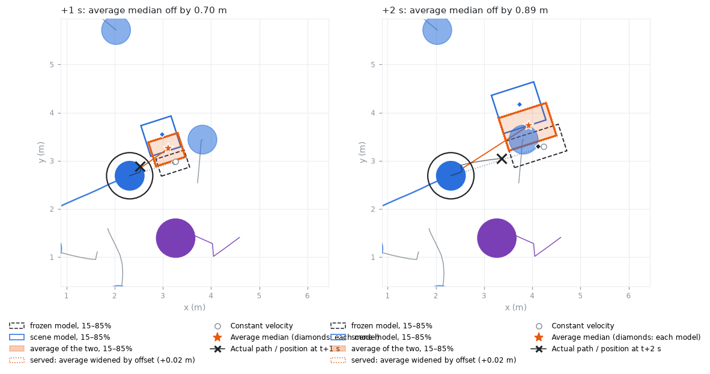
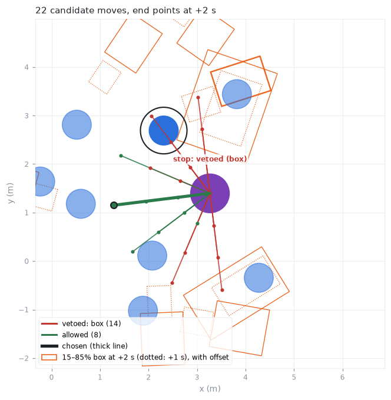

Foresight internal reference
Everything the team needs to understand Foresight and trace each decision: what we built, why, how, on which data, how every layer is parameterised and tested, every experiment with the gate written before it, every fix, and what is still open.
Foresight predicts where each person near a robot will be 1 and 2 s ahead as a box (per-axis quantile range in the person's own frame), using TabPFN reading labelled example rows instead of being trained, and plans the robot's move around those boxes. The public-facing explainer is docs/explainer.html; this page is the working reference behind it.
How to read this page. Every number names its source file and its decision row (D-xx, docs/DECISIONS.md) or commit. Status tags: final settled on the current feature version (f4); pending not yet run or analysed; superseded replaced by a later version, kept for the record; withdrawn measured the wrong thing; exploratory added after a gate was seen, carries no claim; open undecided. Times are commit times on the team laptop's clock, which is Berlin time (UTC+1); they match the timestamps written in RESULTS.md (amendment 1 = 0d5d335 at 23:51, amendment 2 = 889bc36 at 00:34). Tables marked "generated" were built from the result CSVs when this page was assembled, not retyped.
01Status at a glance
| Claim | Status | Evidence (numbers) | Source | Decisions / commits |
|---|---|---|---|---|
| A. TabPFN's 5–95% box keeps its nominal 80–90% joint coverage in a scene it never saw; LightGBM under-covers unless tuned or calibrated. No point-error gain claimed | final f4, incl. paired person bootstrap | Joint coverage, ETH → Hotel: TabPFN 86.4% ± 1.9; LightGBM same 1,500 rows 67.6%, m50 n100 78.0%, all 14,223 rows 74.9%; CV + band 92.2% (width 0.82 m vs 0.59 m). Hotel → ETH: TabPFN 74.8%; LightGBM 45.1 / 58.6 / 57.7%; band 68.5%. Interval score (90%): → Hotel 1.04 vs 1.04 (lgbm_all); → ETH 1.75 vs ≥ 1.99. Error: all models within 0.03 m of tuned CV (0.254 / 0.428 m). Moving people only: TabPFN 80.8% / 75.6%. Bootstrap (5,000 person resamples), TabPFN − lgbm_all: Hotel → ETH interval score 5–95 −0.303 [−0.425, −0.184], box miss −17.0 pts [−21.0, −13.0]; ETH → Hotel interval score +0.007 [−0.057, +0.065] (level), box miss −11.5 pts [−15.7, −7.5] | results/claim_a_f4.csv, .md (tools/claim_a.py, Sun 00:18); results/claim_a_boot_f4.csv (tools/claim_a_boot.py); RESULTS "Claim A on f4" (766c0da) | D-20, D-22, D-26 (f4); f1 numbers (83% vs 46–62%) superseded; 0d5d335 added m50 n100 and the interval score |
| B. Reading the scene's own completed rows (no weight change) improves TabPFN when behaviour changes | final offline sim in-loop T5 | T3 (Setting B), after an unseen switch into erratic, split2k+offset minus frozen2k+offset: coverage +12.6 pts [+9.0, +16.3], interval score −1.29 [−1.70, −0.94], median error −0.057 m [−0.092, −0.021], pinball −0.034. Before the switch level (81.4% vs 83.7%). No variant reaches 80% after (best 68.4%). Real data (Setting A, 137 rows / 44 moments): no variant beat CV | results/live_variants_cp.csv (Sun 00:15), results/live_variants.csv (00:01); RESULTS amendment 2 | D-30 (split chosen on this data, disclosed), D-31; 306a2ab, 0f4e479. "First 5 s" pilot withdrawn |
| C. Prediction-aware planning beats standard navigation at matched safety | not shown stress test | T1 (default plaza, 100 seeds): LightGBM q0.15 23.3 s / 0.80 s intrusion sits on the CV-margin curve (cv m0.6 23.8 / 0.87). Oracle gate (r2 · i0.2 · p24, 20 seeds): oracle only +1.59 s [0.86, 2.39] faster than cv m0.2; vo w0.5 faster than every oracle point. Time floor 17.74 s; vo w0.5 runs 1.50 s above it | results/t1_gate.csv, results/oracle_gate_cross*.csv | D-19, D-21, D-32, D-33; amendment 2 (889bc36) |
| D. Deployable on a robot | open | 3.5: 218,987,657 parameters (836 MB); 3.5-Fast: 83,534,985 (319 MB). Emulated-CPU plan times 0.2–2.0 s against a 0.4 s replan. Loop runs Fast-1; proposed product tier 3.5-1. 3.5 weights non-commercial; v2 Apache 2.0 | RESULTS deployment notes; DEPLOYMENT.md; T4 runs | D-5, D-18, D-29, D-30; 01c78a2, bd1e240 |
| Data efficiency. TabPFN learns more per example row | final sim, in-distribution | Crossing crowd, +2 s: TabPFN-Fast-1 on 2,000 rows 0.646 m (pinball 0.106, coverage 85%) ≈ LightGBM on 20,000 (0.634 m, 0.106, 79%). TabPFN-3.5 (API, 8 est.) on 20,000: 0.593 m, 0.096, 87%, best of all; LightGBM all 73,163: 0.606 m, 0.101, 83%. Similarity retrieval changes error by ≤ 0.005 m | results/context_size.csv (Sun 01:07) | 70372d5; D-30 dropped kNN |
| When to use which | holds so far | Many familiar rows: LightGBM is as good or better on the point. Few rows or a new place: TabPFN's ranges are better calibrated. Both under-cover turns | context_size, claim_a_f4 | PLAN §2 |
What is final, what is pending
| Item | Status | Where / what decides it |
|---|---|---|
| Claim A table on f4 (5 context seeds, interval score, m50 n100, moving vs standing) | final | results/claim_a_f4.csv |
| Claim A paired person bootstrap (TabPFN − lgbm_all, TabPFN − m50 n100) | final | results/claim_a_boot_f4.csv; RESULTS "Claim A on f4" (766c0da, Sun 01:37) |
| Context size and retrieval (local + API) | final | results/context_size.csv |
| T3 = live variants Setting B (6 episodes, not the planned 12) | final | D-30 deviation, results/live_variants_cp.csv |
| S0 gates (plaza f3, cross f3, cross f4, T2 bank f4), S1 gate | final | D-12, D-25 superseded, D-27, amendment 2, D-26 |
| T1, T2 pick, oracle gate | final | D-19, D-32, D-33 |
| T4 values (offset ON per batch; smoothing OFF, confirmed at 10 seeds; latency arm and smoothing-ON primary later dropped for compute) | final | RESULTS T4 addendum parts 1–5 (bec10b7, 6517981, 722e1bd, 3df14bf, 766c0da) |
| T5 confirmatory closed loop: baselines and oracle on 40 fresh seeds (3000–3039); learned arms pruned to 20 seeds (3000–3019): split q0.15 (primary), split q0.10, frozen tabpfn q0.15, lgbm_all q0.15; in-loop claim B is now the main closed-loop question | pending running since 01:12, pruned 01:36 (part 5), hard stop 08:00 | tools/t5.ps1, tools/t5_pruned.ps1, tools/seed_cap.ps1; analysis tools/curve_compare.py (Holm, 4 baselines) and tools/inloop_claimb.py. See §5 T5 for the file-glob caveat |
| Calibration layer on arrival / after 20 s, f4 | pending | tools/conformal_eval.py; existing table is f1 superseded |
| Real-data in-context / adaptation on f4 with person intervals | pending | tools/incontext_eval.py + tools/adapt_ci.py; D-29 budget ≤ 4M credits |
| GPU / Apple-silicon latency, MPS parity | pending | tools/latency.py, tools/check_mps.py, scripts/mac/smoke.sh → docs/runs/mac_smoke.md |
| Walkthrough on the final split planner | final rebuilt 01:44 (c9823d0) | tools/walkthrough.py → docs/walkthrough/*; the appendix header states which version this page embeds |
| S6 occupancy metric (Brier, AUC vs band and LightGBM) | pending | function and per-moment scores exist; no aggregate run |
| Deadline takeover when TabPFN is late (S8) | designed, not built | DEPLOYMENT §3; GATES S8 |
Arms with a result file in results/closed/ at page build time (31 tags; partial, still running, no outcome read): robotfeat_20261122-011211-t5-rea02 robotfeat_20261122-011216-t5-rea04-r02 robotfeat_20261122-011311-t5-cvm02 robotfeat_20261122-012346-t5-rea04 robotfeat_20261122-012617-t5-cvm04 robotfeat_20261122-013608-t5-rea06 robotfeat_20261122-013619-t5-lgbmall-q15 robotfeat_20261122-013620-t5-tabpfn-q15 robotfeat_20261122-013751-t5-cvm06 robotfeat_20261122-014134-t5-rea08 robotfeat_20261122-014402-t5-cvm08 t5-cvm02 t5-cvm04 t5-cvm06 t5-cvm08 t5-lgbmall-q15 t5-orm02 t5-orm04 t5-orm06 t5-rea02 t5-rea04 t5-rea04-r02 t5-rea06 t5-rea08 t5-split-q10 t5-split-q15 t5-stopgo t5-tabpfn-q15 t5-vo05 t5-vo10 t5-vo20
02Timeline: Saturday 16:00 to now
From git log --all (commit times, Berlin clock). 131 commits on all branches at page build. Rows in bold are pivots or gates; "sync" commits that mirror plan docs to main (tools/sync_docs.ps1) are left out. Teammate work on origin/nooshin/dev (street and doorway scenes, 3D demo) is listed but is not merged into darshak/core and not part of any evaluated result.
| Time | Commit | Event | Kind |
|---|---|---|---|
| Sat 16:35 | 58f96f8 | First commit (Nooshin): files uploaded, incl. docs/tabpfn-hackathon-strategies.md | start |
| Sat 16:36 | cae40f2 | Core pipeline: data interface (INTERFACE.md), features, models, stand-in crowd sim (toy_crowd.py) | build |
| Sat 16:37 | e629088 | R1 demo: animate an episode with predicted 2 s ranges | build |
| Sat 16:59 | 5c4b552 | Crowd simulator (Nooshin): social-force crowd, regimes, closed-loop hook (crowd.py) | build |
| Sat 17:03 | 46d3e5d | Real pedestrian data: ETH/Hotel adapter (eth_ucy.py), cross-dataset evaluation | build |
| Sat 17:13–17:17 | f58aa0f, ae4b169 | Annotated demo clip on Hotel (TabPFN, context from ETH); later marked superseded (made before the B9 bounds fix) | demo |
| Sat 17:42 | dec878a | R1 baselines on real pedestrians: evaluation, figures, working deck | result (f1) |
| Sat 18:15–18:28 | d3dcb63, 3c1afc5 | Merge Nooshin's simulator; R3 closed loop: planner, runner, renderer | build |
| Sat ~18:30 | (doc) | First CTO review (docs/CTO-REVIEW.md, at 3c1afc5): problem right, headline over-claimed, claim B has no numbers, closed-loop log duplicated | review |
| Sat 18:47–18:59 | 708c573, 96fa09d | Scenario catalogue, R2 adaptation experiment, planner v2; review fixes (deduped closed-loop log, joint box coverage, planner horizons, latency tool) | fix |
| Sat ~19:00 | (doc) 7ee9d56 20:22 | GATES.md written: blocking fixes B1–B9, a gate per stage S0–S8, fair-comparison protocol | gate |
| Sat 19:11 | 2372cf4 | Blocking fixes B1–B9, incl. B9: real-data bounds (camera field of view from future positions) removed from features | fix (leak) |
| Sat 19:15–19:33 | 3378567, a56e72b, 6b88142, dfbb5ef, c1cda86 | CTO follow-ups F1–F4; person-bootstrap intervals in failure modes; RESULTS after the leak fix (calibration leads); S5 conformal layer; overnight launcher | build |
| Sat 20:19–20:22 | a76bfe6, 4bd3d2f | Conformal results both directions on the API (f1): TabPFN calibrated out of the box; conformal LightGBM narrower after ~20 s | result (f1) |
| Sat 20:26–20:27 | 7ad7fd9, 7868fa6 | Navigation baselines (stop_go, reactive, vo) and per-episode metrics (v4); overnight baselines swept over their own dials | build |
| Sat 20:28 | 188d046 | Original pre-registration of the closed-loop headline rule (≤ 2% collisions, ≤ 1 s intrusion, lowest time); also time_to_collision fix | prereg |
| Sat 20:40–20:42 | aea8af6, ed97969, 3976e3d | Adaptation, failure-mode and in-context figures; person ids and small-context LightGBM settings; note that best-LightGBM is picked on the test scene | result (f1) |
| Sat 21:39–21:49 | 13e6222, 67d7b3d, 3d20b22 | Deployment notes (licence, timings); MANIFEST of current vs superseded figures; tier grid on the API (f1) | doc / result |
| Sat 22:01–22:07 | 33a445d, 8c43c5b, 112dc4c, 01c78a2, 2ed969a, bd1e240 | Trace per (scene, planner, seed); 3D export; T3 calm→erratic set and D-17/D-18; latency tool; DEPLOYMENT, VISUALS, DECISIONS docs; device auto (cuda > mps > cpu) | build |
| Sat ~22:05 | (server) | Daily API cap of 35M credits hit (dense in-context pilot); results/api_usage.csv | budget |
| Sat 22:10 | 0860038 | PLAN.md becomes the living plan hub; sync_docs mirrors plan docs to main | doc |
| Sat 22:38–22:39 | d123543, 65e6a2a | T2 difficulty knobs robot_repulsion, ignore_robot (bit-identical defaults, golden tests); knobs forwarded; occupancy AUC averages tied ranks | build / fix |
| Sat 22:40 | 5952c4e, d35dae3 22:41 | T1 result: the default plaza does not separate planners (D-19). Pilot finding written up (DECISIONS §1). T2 launcher (default scene, seeds 4000–4019) | gate failed |
| Sat 22:49–22:53 | c4ae950, e53f53e, 3fb3044, 8d6635a | Explainer v1; robustness tests (loop 48, core 41, with strict xfails for known bugs); data cards (docs/DATA.md: simulated turns 36% vs real 2–3%) | doc / test |
| Sat 22:54 | 9f04ab1, f4e103c 22:55, 1ce93ce 22:56 | Features f2 (D-20): f1 leaked world heading through rotated "no obstacle" padding; standing people faced the world x-axis; history gaps. Occupancy cell mass fixed. Claim A marked for rerun | fix (leak) |
| Sat 22:59 | a433b1e, b7d3570, 698beaa | 9 strict xfails dropped (bugs fixed in f2); f3 (D-22: "unknown" not "stop" when the person leaves the view); open-loop oracle with its gate written first (D-21); T2 judged on moving collisions (D-23) | fix / gate |
| Sat 23:00 | 0e1b8da | tools/claim_a.py: claim A on fixed features, same test rows as pre-fix, 5 context seeds | build |
| Sat 23:02–23:10 | 66143a1, e087f70, 9d822ab | Pivot: plaza → crossing crowd (D-24, Darshak: "Yes, use crossing crowd"). goal_mode="cross"; bank data/crowd_cross; S0 passes on f3 (D-25); T2 cross sweep (seeds 4100–4119) starts | pivot |
| Sat 23:15 | 7a19777 | docs/REFERENCES.md: 36 verified references | doc |
| Sat 23:26–23:27 | 22ce784, d25281a | Features f4: Kalman fix (D-26). Filter tuned per dataset on training data; CV 24–30% stronger; S1 gate passes. S0 cross on f4 passes narrowly (D-27); T2 cross restarted on f4 (~23:28) | fix / gate |
| Sat 23:27, 23:34 | 81a162f, 7ede4f8 (nooshin/dev) | Street and doorway scenes, 3D demo with TabPFN ranges, demo video 2:38. Not merged into darshak/core | teammate |
| Sat 23:30–23:31 | b761148, 4376492, adc7dc1 | PLAN orchestration to the freeze; explainer sources; timestamp fix: DECISIONS labels had run ~1 h ahead of commit times | doc / fix |
| Sat 23:41–23:45 | 764cf17, 1c6c940, 9ddbd96, b1acaba | Planner smoothing option (D-28, default off); PRESENTATION plan; Mac kit; D-29 monthly API budget, RESULTS marked "being rerun on f4" | build / doc |
| Sat 23:49–23:52 | d9d5751, 5da5e8e, c5d8166, d67437f | Red-team review (DEFENSE.md, top 10 attacks, 36 Q&A); fixes: claim A = calibration only, cold-start pilot withdrawn, nominal coverage 80–90%; INDUSTRY brief (37 sources) | review / withdraw |
| Sat 23:51 | 0d5d335 | Pre-registration amendment 1: mechanical T2 picker, per-planner dial sweeps, named primary with Holm–Bonferroni, matched-safety curves, fallback. D-8 corrected; open-loop oracle named; recency-only context takes no bank rows; claim A second pass (m50 n100, interval score) | prereg |
| Sat 23:53 | 1727056 | Walkthrough: one real tabpfn_live decision through every stage (f4, seed 6001, t = 4.4 s) | doc |
| Sun 00:06 | 35b02e9 | tools/live_variants.py: frozen, full mix, recent-only, split, scene tags, LightGBM on Hotel → ETH and the simulated held-out switch | experiment |
| Sun ~00:10 | (D-30), d019ef8 00:11 | Live TabPFN setup decided early: frozen 2,000-row bank, no kNN; primary candidate tabpfn_split; T5 prep (erratic-free bank, switch-all into erratic, T2 picker) | decision |
| Sun 00:14 | d47e934 | Frozen context at natural move frequency (D-31: rare-move over-representation fixed); --switch-t; oracle gate runs; T2 cell chosen (D-32) | fix / decision |
| Sun 00:18 | 306a2ab, 0f4e479; claim A file 00:18; oracle files 00:19 | WP-J2 rule: split2k+offset is the primary. Claim B supported offline in simulation. results/claim_a_f4.csv written. Oracle gate runs finish | result |
| Sun 00:22 | f5e2872 | Oracle gate failed: claim C reported as a stress test (pre-registered) | gate failed |
| Sun 00:34 | 889bc36 | Pre-registration amendment 2 before any T5 seed: split primary, switch into erratic at 5 s, in-loop offset spec, exploratory matched-time safety and in-loop claim B; D-33 | prereg |
| Sun 00:36–00:40 | bec10b7, 969379b, 69b2e78, 6517981, 75d1376 | T4 addendum part 1 (offset rule test, gate first); DEFENSE Q&A 0 (time floor); t5.ps1; part 2 (smoothing gate exact); t4_report and inloop_claimb tools | prereg / build |
| Sun 00:51–01:01 | 0d4c368, 722e1bd, c89888e | t5.ps1 split into processes; part 3: latency arm fixed at 0.4 s, fast-replan baselines at the 0.2 s sim step (0.1 s impossible); cutoff at 08:00 | prereg |
| Sun 01:08 | 70372d5 | Context size final: TabPFN-3.5 on 20k rows beats LightGBM on all 73k (0.593 vs 0.606 m; coverage 87 vs 83%); retrieval adds nothing | result |
| Sun 01:12 | 3df14bf | T4 addendum part 4 and T5 launch: offset ON (batch rule), smoothing OFF; baselines in both smoothing modes; secondary arms on 20 seeds | launch |
| Sun 01:17–01:25 | bf41733, 5d4a348, faf9738 | f4 figures from finished results (tools/plot_results.py); README rewrite with result-file snapshot; t4_report skips robotfeat files | doc / fix |
| Sun 01:36–01:37 | 766c0da | T4/T5 addendum part 5 (before any learned result): compute pruning, learned arms on 20 seeds; smoothing OFF confirmed at 10 seeds; claim A f4 section with paired person bootstrap in RESULTS | prereg |
| Sun 01:37–01:44 | 23769da, 4d745e6, 7a9b69d, c9823d0 | External overview page (docs/explainer.html); claim A final with bootstrap and figure; 16 slide/video diagrams; walkthrough rebuilt on the final split planner; four-panel renderer | doc / result |
| Sun 01:12 → 08:00 | — | T5 running (tools/cutoff.ps1 kills --tag t5- processes at 08:00); analysis, final figures, README, video, freeze 12:30, submit by 16:00 | pending |
03Architecture, layer by layer
A modular sense → predict → plan stack (GATES §1). Each stage has its own gate; the closed loop has the final say. Every simulator or dataset writes the same three files (INTERFACE.md: tracks.csv, obstacles.csv, meta.json), and everything downstream reads only those files.
- S0 Datacrowd.py, eth_ucy.py, schema.py
- S1 State estimate0.1 m noise + forward Kalman, tuned per dataset (f4)
- S2 Table39 agent-frame columns; target = deviation from CV
- S3 Contextfrozen 2,000-row bank + ≤ 250 recent scene rows
- S4 ForecasterTabPFN quantiles per axis; LightGBM, CV, band as rivals
- S5 Calibrationonline offset d, batch rule in the loop
- S6 Occupancysame quantiles on a 0.25 m grid
- S7 Planner22 candidates, box veto at +1/+2 s, 0.4 s CV check
- S8 Systemvirtual time, latency arm, trace; takeover not built
S0 Data: simulator and real-data adapter
- Purpose
- Real pedestrians answer "does it work on real people in a new place"; the simulator answers "what does a robot gain", because real recordings have no robot and cannot react to one.
- Implementation
foresight/domains/crowd.py:CrowdConfig,CrowdSim.reset/step,generate(),simulate(),observe(),summary().foresight/domains/eth_ucy.py: convert().foresight/core/schema.py: load()/validate().toy_crowd.py: old stand-in, tests only (also--sim toy).- Gate
schema.validate()passes, and in each simulated scene CV loses ≥ 15% at +2 s to the best learned model (GATES S0;tools/s0_gate.py).
| Parameter | Value | Decision / source | Why |
|---|---|---|---|
| Time step | 0.2 s (sim); 0.4 s (ETH/Hotel, 2.5 fps) | crowd.py; eth_ucy.py DT | Explicit Euler stable at 0.2 s with MAX_FORCE 10 m/s²; INTERFACE.md asked for 0.1 s (DATA.md notes the gap) |
| Plaza | 20 × 20 m (half_size 10), 2 circular pillars r 0.5–1.2 m, clear of the robot's straight line by r + 1.4 m | CrowdConfig, reset() | Small enough that the robot meets people within 20 s |
| People, duration | 16 people, 40 s (default plaza, D-12); 24 people in the T2 cell (D-32) | D-12, D-32 | 16 passed S0 on the plaza; 24 chosen by the T2 picker |
| Radii | person 0.3 m, robot 0.4 m (sim); 0.25 m on ETH/Hotel | PERSON_R, ROBOT_R; eth_ucy.py | Disc model; planner uses 0.3 / 0.4 m everywhere |
| Regimes (v0 m/s, tau s, A m/s², B m, stop /s, stop s, turn /s) | calm 0.9, 0.6, 2.0, 0.6, 0.02, 1–3, 0 · hurried 1.6, 0.35, 2.0, 0.3, 0.005, 0.5–1, 0 · erratic 1.1, 0.3, 1.8, 0.4, 0.15, 0.6–2.5, 0.2 | REGIMES | Erratic adds sudden stops and goals 60–150° left or right, 3–7 m away (_turn_goal) |
| Per-person jitter | multiplicative N(1, 0.1) clipped 0.7–1.3 on v0, A, B, rates | jitter | Heterogeneous crowd inside a regime |
| Social force | anticipation LOOKAHEAD 0.6 s; anisotropy LAMBDA 0.35; walls 3.0·exp(−d/0.25); obstacles A 10, B 0.3 plus a sideways steer; speed cap 1.3 × max(v0, 0.5) | crowd.py constants | Helbing–Molnár style with a forward field of view (REFERENCES #14); not validated against real trajectories |
| Robot repulsion | 2.0 (people push 2× harder from the robot); min range 0.6 m | ROBOT_REPULSION, T2 knob | Pilot hypothesis: at 2× "nothing punishes a pushy robot" (DECISIONS §1.1); T2 swept 2 / 1 / 0.5 |
ignore_robot | share of people who ignore the robot; 0 default, 0.2 in the T2 cell | d123543; drawn from a separate stream rng([seed, 7919]) | Same crowd otherwise (nested shares, golden tests) |
goal_mode | "anywhere" (original) or "cross": goal on the far side; on arrival a new person (new id) enters at a random edge already walking | D-24, 66143a1 | Brings turns from 36% to 8–13% of 2 s windows and calm/hurried CV error to 0.33–0.47 m (real: 0.25–0.37 m) |
| Regime switch | Bank: ~50% of episodes (switch_prob 0.5), crowd-wide at 35–65% of the episode (14–26 s). Loop: odd seeds at 20 s (--switch); T5 every seed into erratic at 5 s (--switch-all --switch-to erratic --switch-t 5) | generate(); D-33 | 5 s so the scene model can receive erratic labels while the robot is still crossing (arrives ~22 s) |
| Robot policy in the sim (= stop_go baseline) | straight line to its goal, speed = robot_speed × clip((nearest − 0.8)/1.5, 0, 1); walks back after arrival | _robot_policy | What sidewalk robots publicly describe (INDUSTRY §2) |
| Robot start / goal | x = ±9 m on a random side, y uniform in ±5 m; goal on the opposite side | reset() | Crossing through the crowd |
| ETH / Hotel conversion | obsmat.txt (frame, id, x, z, y, vx, vz, vy), 60 s windows → episodes, bounds = None, no obstacles, regime = scene name | eth_ucy.py; B9 | Bounding box of all positions = camera field of view from future positions: a leak (fixed 19:11) |
Tests: tests/test_crowd.py (14: validation, determinism, switches, goals, avoidance, regimes, jitter, robot command, observe forward-only); tests/test_robustness_sim.py (12: golden checksums from before the knobs, knob validation, ignore stream, cross mode leaves/enters/no teleports/turns less); 5 validate() rejection tests in test_robustness_core.py.
Known limits: simulated people turn far more than real ones (anywhere mode 36% vs 2–3%); stops are short pauses (no long standers like Hotel); social-force people react to the robot, which breaks the assumption behind conformal safety guarantees (Lindemann et al. 2023, Assumption 1); erratic is a synthetic stress regime; real data has no robot and no obstacles, so those features are constant there; the same seed gives the same crowd only on the same platform (MAC_SETUP rules).
S1 State estimate: noise and the forward Kalman filter
- Purpose
- A robot never sees exact positions. Every model sees noisy, filtered states; constant velocity uses the filtered velocity.
- Implementation
features._kalman_cv(z, dt, q, r): state [x, y, vx, vy], constant-velocity transition, Q = q·[dt³/3, dt²/2; dt²/2, dt] per axis, R = r²·I, initial P = diag(r², r², 4, 4) with zero velocity; restarts after a gap.kalman_params()/load_kalman()read<dataset>/kalman.json. Noise per agent fromrng([seed, agent_id])over absolute steps, so a growing live history gives the same observations as the offline rows.- Gate
- Original: filtered velocity error at 0.1 m noise plus parity B8. As run (D-26): CV error at +4.8 s on gap-free windows within 10% of the published CVM.
| Dataset | Noise | q, r | Tuned on | CV +2 s before → after | CV +4.8 s (gate windows) vs published |
|---|---|---|---|---|---|
| eth | 0 (annotated) | 0.1, 0.1 | data/hotel (cross-scene), all episodes | 0.557 → 0.423 m | 1.457 → 1.123 m vs 1.15 (Schöller et al. 2020) |
| hotel | 0 | 0.1, 0.1 | data/eth (cross-scene) | 0.373 → 0.283 m | 0.662 → 0.460 m vs 0.51 |
| crowd_cross | 0.1 m | 0.01, 0.05 (grid interior) | its training split | 1.179 → 0.829 m | — |
| crowd_cross_t2 | 0.1 m | 0.01, 0.05 (grid_edge: true) | its training split | CV +2 s 0.827 m | — |
| crowd (plaza) | 0.1 m | none: f1–f3 default q 2, r max(noise, 0.05) | — | — | T1 ran on this untuned filter |
Sources: D-26 (22ce784), data/*/kalman.json (read at build), amendment 2 (t2 bank). D-10 (q 2 everywhere) superseded. On the f1 evaluation rows the f4 CV at +4.8 s is 1.154 m (ETH) and 0.606 m (Hotel); over all cached rows 1.128 and 0.582 m, so Hotel is 14% above the published 0.51 depending on the window rule (DEFENSE attack 10). Do not say "matches"; say "within 3–10% on comparable gap-free windows".
Effect: CV became 24–30% stronger at +2 s, so every "beats CV" gain before f4 was inflated, and every learned box was measured against a noisy CV point. Everything was rerun on f4. Tests: tests/test_parity.py (3: query matches offline row, observed labels differ from truth only by noise, agent entering mid-episode), test_observe_is_forward_only, test_to_world_inverts_observed_labels. Limits: the filtered-velocity error itself was never reported; one constant-velocity motion model; the crowd_cross_t2 optimum sits at the grid edge.
S2 Table: one row per person, moment and horizon
- Purpose
- Turn tracks into a table TabPFN can read: features in the person's own frame, target = how far they deviate from walking straight.
- Implementation
features.build_rows(tracks, obstacles, meta, horizons, row_every=0.5, noise, seed, query_only, label_from);X_of();to_world();split_by_episode().FEATURES_VERSION = "f4"is written into every row, row-cache file name and result.- Target
dd = R(θ) · (p_true(t+h) − p_obs(t) − v_obs(t)·h):ddxalong the heading,ddyacross (+ = left). CV is the all-zeros prediction. Live rows uselabel_from="observed"(filtered future positions), offline rows use truth.t_known = t + h.- Frame θ
- Filtered velocity heading if speed > 0.2 m/s; else displacement over the history window if > 0.05 m; else (standing) face the robot, else the nearest agent (f2). Never the world x-axis.
- Eligibility
- Seen at every step of the history window (f2: no NaN history, no fresh Kalman restart); not the ego; offline every 0.5 s (D-11, assumed: rows 0.1 s apart are near-copies); horizon snapped to the data grid (1.2 s on ETH/Hotel).
- Mode label
- Analysis and rare-move fill only, from true velocities over the next 2 s:
stop(mean speed < 0.2),turn_left/turn_right(heading change > 30°),straight, orunknownwhen there is no data 2 s later (f3).
The 39 model columns (features.feature_names(), horizon first)
| # | Column | Group | Definition (agent frame: x along heading, y across, + = left) | Padding when absent |
|---|---|---|---|---|
| 1 | h_f | Horizon | Look-ahead asked about, s (1, 2 in sim; 1.2, 2, 4.8 on ETH/Hotel) | — |
| 2 | speed | Own motion | Filtered speed, m/s | — |
| 3–4 | a_lon, a_lat | Own motion | Acceleration along / across: R·(v(t) − v(t−k·dt))/(k·dt), m/s² | — |
| 5 | turn_rate | Own motion | Heading change over one history step / (k·dt), rad/s; 0 if speed ≤ 0.2 | — |
| 6 | radius | Own motion | Body radius, m (0.3 sim, 0.25 real) | — |
| 7–16 | hist_x1, hist_y1 … hist_x5, hist_y5 | Recent path | Filtered position j·k steps ago minus now, j = 1…5. k = max(1, round(0.2/dt)) = 1 step: 0.2…1.0 s in sim, 0.4…2.0 s on ETH/Hotel | row dropped if any step missing |
| 17–21 | n0_x, n0_y, n0_vx, n0_vy, n0_dist | Neighbours | Nearest other person (robot excluded): relative position, relative velocity, distance | 99, 0, 0, 0, 99 |
| 22–26 | n1_* | Neighbours | 2nd nearest person, same five numbers | 99, 0, 0, 0, 99 |
| 27–31 | n2_* | Neighbours | 3rd nearest person | 99, 0, 0, 0, 99 |
| 32–33 | robot_x, robot_y | Robot | Robot centre offset | 99, 0 |
| 34 | robot_dist | Robot | Distance to robot centre, m | 99 |
| 35 | robot_closing | Robot | −(d · (v_robot − v))/|d|, m/s, + = approaching | 0 |
| 36–37 | obst_x, obst_y | Surroundings | Vector to the nearest pillar surface or wall (walls only when bounds exist) | (99, 0) unrotated (f2 fix) |
| 38 | obst_dist | Surroundings | Distance to that surface, m | 99 |
| 39 | density_3m | Surroundings | People (not the robot) within 3 m | 0 |
Meta columns (never model inputs): episode, t, t_known, agent_id, h, regime, since_switch, mode, px, py, vx, vy, theta, ddx, ddy, true_x, true_y, features_version. regime and goals are ground truth for analysis only (INTERFACE.md). The robot's own state enters only through columns 32–35.
Feature versions
| Version | Time, commit | Change | Why | Status of results on it |
|---|---|---|---|---|
| f1 | Sat 16:36 → 22:54 | Original. After 19:11 without the field-of-view bounds (B9) | — | superseded: real-data table, calibration table, tier grid, adaptation pilot, T1 scene |
| f2 | Sat 22:54, 9f04ab1 (D-20) | (a) "no obstacle" padding not rotated; (b) standing people face robot / nearest agent; (c) full-window history check. Also kNN keeps nearest ranks, cv_band straddles 0, stop_go honours --max-speed | (a) put 99·cos θ, −99·sin θ into obst_x/obst_y on 100% of real rows = world heading; (b) 33% of Hotel, 7% of ETH rows got a world-axis frame; (c) gaps gave NaN features | transitional |
| f3 | Sat 22:59, b7d3570 (D-22) | Mode "unknown" when no data 2 s later; not in the rare fill | ETH "stop" at 1.2 s was 15.5% against 6.5% genuinely slow: exits counted as stops | D-25 S0 cross superseded |
| f4 | Sat 23:26, 22ce784 (D-26) | Kalman (q, r) tuned per dataset on training data, used by bank rows, live queries, live rows and traces | q = 2 made CV 24–30% too weak | current: every number on this page unless tagged |
Tests: test_robustness_core.py feature tests: invariance to rigid motion, standing agent invariant to rotation, to_world recovers the true future, rows unchanged when the episode is truncated, features blind to a scrambled future (causality), padded neighbours and robot, late and short-lived agents, track gaps give no NaN, horizon past episode end drops rows. Limits: missing values coded as 99 rather than NaN (TabPFN handles NaN natively; the A/B in DEPLOYMENT §5 was never run); no ablation shows neighbour or history features help, and Schöller et al. 2020 cut against it (REFERENCES #2b); the CV-residual target in the agent frame is our own design (REFERENCES #3).
S3 Context: which labelled rows TabPFN reads
- Purpose
- TabPFN's "training" is the set of rows it reads. Choosing them is the only way it adapts, with no weight change.
- Implementation
context.Bank(training rows subsampled to 20,000, standardised kNN index on 11 situation features),context.select()(recent / kNN / fill mix),context.frozen()(natural-frequency fixed bank);run_closed.Predictor(tabpfn,tabpfn_live,tabpfn_split,AvgQuantiles). Causality: a row is usable at t only oncet_known ≤ t.
| Version | What the model reads | Parameters (decision) | Used in | Status |
|---|---|---|---|---|
| v1 random | --context random bank rows, fitted once (random_state 0) | 1,000 rows (D-4); 1,500 offline (claim A) | overnight / T1 tabpfn, lgbm; evaluate.py; claim_a.py | offline: current for claim A; loop: replaced by v3 |
v2 mix (select) | 60% this episode's completed rows (last 25 s, observed labels) + 30% kNN bank rows + 10% fill (half rare stop/turn rows, half random); unused recent share goes to the bank; deduplicated | D-9 (proportions from the plan, not tuned), D-3 refit 2 s, LIVE_WINDOW 25 s, budget 1,000 (loop) | tabpfn_live, lgbm_live (overnight); run_adapt.py; incontext_eval.py; the first walkthrough (Sat 23:53, rebuilt on split at 01:44) | superseded by D-30 |
| v3 frozen + split | Bank model: 2,000 random rows at natural move frequency, exact budget, no duplicates, forced rare share 0 (cap 5%), cached once. Scene model: ≤ 250 most recent completed rows of this episode (observed labels), refit every 2 s. Quantiles averaged per axis, then sorted. Bank model alone below 20 recent rows | D-30, D-31; SPLIT_REC 250, SPLIT_THIN 20; --frozen-ctx fill --context 2000 | T4, T5 primary tabpfn_split; frozen tabpfn and lgbm read the same 2,000 rows | current |
Why kNN was dropped (D-30): (1) cost: the full mix took 6.8–8.2 s per moment against 0.17–0.29 s frozen and ~2.5–3.0 s split (live_variants.csv); (2) on real data the full mix was worse than frozen (mean error 0.330 vs 0.308 m, Setting A); (3) at equal size, retrieved rows did not beat random rows (context_size: ≤ 0.005 m; TabPFN-Fast 1,000 rows 0.6875 vs 0.6854; 3.5 API 5,000 rows 0.6167 vs 0.6189); (4) the literature support (LoCalPFN) is classification-only on TabPFN v1. Why natural frequency (D-31): TabPFN calibrates to its context's distribution; the first frozen() forced up to half rare moves (~25% turns, ~2% stops in cross rows), which would widen every box and pull medians toward turning.
KNN features (v2 only): speed, a_lon, turn_rate, n0_dist, n0_x, n0_y, robot_dist, robot_closing, obst_dist, density_3m, h_f; ranks are rank-major (every query's 1-NN first) so truncation drops the farthest (fix in 9f04ab1). Tests: test_select_is_causal_bounded_and_unique, test_select_cold_start_uses_bank, test_select_keeps_each_querys_nearest_bank_row. Limits: 250 and 20 are not tuned; averaging two models' quantiles is not a proper mixture; the split setup was chosen on the same Setting B data that later supports claim B (disclosed, D-30); in the first ~4 s of a scene no in-scene row has a known outcome (history + t + h), so early bins are cold start for every strategy.
S4 Forecaster: TabPFN and its rivals behind one interface
- Purpose
- Quantiles of (ddx, ddy) for every person and horizon in one batched call.
- Implementation
models.make(name)→ConstantVelocity(zeros),ConstantBand(training residual quantiles per horizon, straddling 0),LGBMQuantile,TabPFNQuantile. One TabPFN regressor per axis;predict(output_type="quantiles");fit_mode="fit_with_cache"in the loop;best_device()cuda > mps > cpu (bd1e240); CPU guard above 5,000 rows; hosted API throughtabpfn_client(flat price per predict call)."lgbm:m50:n100"encodes LightGBM settings.
Which TabPFN produced which result
| Result | Model | Estimators | Where | Context |
|---|---|---|---|---|
| Claim A f4 (claim_a.py) | TabPFN-3.5 default | default (8) | local CPU | 1,500 random source-scene rows, 5 seeds |
| Calibration table (f1) | hosted default | default | API | 1,500 rows |
| Tier grid / tier seeds (f1) | 3.5, 3.5-Fast, v2 | 1–8 | API | 250–2,000 |
| Context size | 3.5-Fast (local) and 3.5 default (API) | 1 / 8 | local / API | 500–2,000 / 1,000–20,000 |
| S0 gates, live variants, T3, closed loop (T4, T5) | 3.5-Fast | 1 (tabpfn_cfg = fast1-est1) | local CPU | 1,000 (S0) / 2,000 (+ 250 recent) |
| Proposed product real-time tier | 3.5 | 1 | robot GPU (not measured) | ~1,000–2,000 |
Tier evidence (f1, superseded but decision-relevant). D-18: on ETH → Hotel Fast-1 was worse (0.385 vs 0.300 m at 1,000 rows, one sample; 0.348 ± 0.019 vs 0.309 ± 0.029 over 3 seeds, about one SD: suggestive, not established); on Hotel → ETH and the crowd every tier was within 0.01–0.02 m; v2 (Apache) was as good or better on Hotel → ETH (0.449 vs 0.474–0.479 m) and weaker on ETH → Hotel (0.330 vs 0.309). Across scenes 2,000 rows were worse than 1,000 (Hotel → ETH 3.5-1: 0.479 → 0.526); in-distribution TabPFN keeps improving with rows (context size). D-30 kept Fast-1 in the loop (in-distribution, equal there, ~13× faster on CPU).
| Setup | Model | Estimators | Context rows | Seeds | Error +2 s (m) | Pinball | Joint cov. 5–95% | 10–90% width (m) |
|---|---|---|---|---|---|---|---|---|
| eth → hotel | v2 | default | 1,000 | 3 | 0.330 ± 0.028 | 0.055 | 90.4% | 0.86 |
| eth → hotel | v2 | default | 2,000 | 2 | 0.415 ± 0.096 | 0.063 | 91.1% | 1.00 |
| eth → hotel | v3.5 | 1 | 1,000 | 3 | 0.309 ± 0.029 | 0.053 | 94.1% | 0.91 |
| eth → hotel | v3.5 | 1 | 2,000 | 3 | 0.352 ± 0.072 | 0.059 | 93.9% | 1.03 |
| eth → hotel | v3.5 | 8 | 1,000 | 3 | 0.317 ± 0.037 | 0.054 | 94.9% | 0.93 |
| eth → hotel | v3.5 | 8 | 2,000 | 3 | 0.353 ± 0.076 | 0.060 | 94.9% | 1.06 |
| eth → hotel | v3.5-fast | 1 | 1,000 | 3 | 0.348 ± 0.019 | 0.058 | 93.3% | 0.96 |
| eth → hotel | v3.5-fast | 1 | 2,000 | 3 | 0.422 ± 0.082 | 0.066 | 93.0% | 1.08 |
| hotel → eth | v2 | default | 1,000 | 3 | 0.449 ± 0.011 | 0.076 | 82.2% | 0.95 |
| hotel → eth | v2 | default | 2,000 | 3 | 0.463 ± 0.009 | 0.078 | 82.8% | 1.01 |
| hotel → eth | v3.5 | 1 | 1,000 | 3 | 0.479 ± 0.011 | 0.080 | 79.0% | 1.02 |
| hotel → eth | v3.5 | 1 | 2,000 | 3 | 0.526 ± 0.004 | 0.085 | 80.3% | 1.09 |
| hotel → eth | v3.5 | 8 | 1,000 | 3 | 0.474 ± 0.007 | 0.080 | 80.3% | 1.07 |
| hotel → eth | v3.5 | 8 | 2,000 | 3 | 0.525 ± 0.011 | 0.086 | 81.2% | 1.15 |
| hotel → eth | v3.5-fast | 1 | 1,000 | 3 | 0.475 ± 0.024 | 0.080 | 79.6% | 1.02 |
| hotel → eth | v3.5-fast | 1 | 2,000 | 3 | 0.484 ± 0.013 | 0.081 | 81.2% | 1.05 |
Generated from results/tier_seeds.csv (tools/tier_seeds.py, hosted API, Sat 22:02). superseded features f1 (heading leak, untuned filter). Kept because D-5/D-18 were decided on it; tier_seeds was then dropped (D-29).
KV-cache and cost facts (DEPLOYMENT §2, INDUSTRY §6): fit stores the rows and, with fit_with_cache, one forward pass caches the context representation; the weights never change. Each predict attends to the cached context; cost grows with context rows and estimators. All people and horizons go in one batched call (row-by-row is roughly n times slower). Row order does not matter: tools/check_row_order.py (800 rows, 60 queries, four orders) max |difference| 1.4e-5 to 2.5e-5 m on data/crowd f3 rows (21 Nov). Vendor figures: cached predict 0.1–3 ms per test point on an H100 (TabPFN-3 report); CPU capped at 5,000 samples for 3.x; no embedded or Jetson figure exists.
Licence: code Apache 2.0; TabPFN-2.5, 2.6, 3, 3.5 and 3.5-Fast weights non-commercial; v2 weights Apache 2.0 with attribution; commercial production via Prior Labs' enterprise licence or API. Sizes: 3.5 218,987,657 parameters (836 MB float32), 3.5-Fast 83,534,985 (319 MB), counted from the safetensors headers.
LightGBM and the other rivals: settings and fairness
| Model | Settings | Rows | Decision |
|---|---|---|---|
| LightGBM, untuned | objective quantile, 300 trees, learning rate 0.05, 31 leaves, min 10 rows per leaf; one model per quantile per axis, fitted lazily; predictions sorted so quantiles never cross | same rows as TabPFN (lgbm) or all rows (lgbm_all: 14,223 ETH / 7,640 Hotel / 73,163 crowd_cross) | D-15 (pending → the small-data setting below was added instead of a tuned grid) |
| LightGBM, small-data setting | min 50 rows per leaf, 100 trees (lgbm:m50:n100) | same 1,500 rows | 0d5d335 (claim A second pass; DEFENSE attack 2). The GATES grid (7/15/31 leaves × 20/50/100) on a validation split was never run |
lgbm_live | retrains on the live mix every 2 s | live context | D-16: ablation only (retraining on the robot is not normal practice; 1.8 s per plan) |
| CV + band | per-horizon training residual quantiles, forced to straddle 0 | all training rows | "why not a bigger margin" |
Fairness rules in code: identical feature columns (features.X_of), identical context rows for TabPFN and LightGBM-same-rows (evaluate.py, claim_a.py, Predictor), identical test rows and split. In the adaptation runs the best of five LightGBM settings is picked on the test scene, which favours LightGBM. Tests: quantile shape and order, CV zero residual, band constant per horizon with zero median, band monotone with biased residuals, band without a median quantile; tools/check_mps.py (MPS vs CPU parity, not yet run). Limits: two independent axis models (no joint distribution); TabPFN-3.5's source is a vendor report, not peer reviewed; quantiles are read off the predictive distribution; all timings are x64 emulated on an ARM CPU.
S5 Calibration: split and online conformal offsets
- Purpose
- One number d per model (per horizon offline) widens or narrows every box so its long-run miss rate tracks the target, for any model's quantiles.
- Implementation
foresight/core/conformal.py: joint conformity scores = max over axes of max(lo − y, y − hi)(CQR taken jointly, Romano et al. 2019); the box widened by d holds the truth exactly when s ≤ d.split_offset(): (1 − α) quantile with the finite-sample rank ⌈(n+1)(1−α)⌉ − 1.online_offsets():d ← d + η (miss − α), events sorted by time with "outcome known" applied before "predict", restart per episode.widen()keeps hi ≥ lo. In the loop:run_closed.Predictor._update_offset().- Gate
- Joint coverage within ±3 points of nominal after 20 s in a new scene, applied to every model (GATES S5).
| Setting | Box scored | α (target miss) | Update | Labels | Source |
|---|---|---|---|---|---|
| Offline, on arrival | 10–90% per axis (nominal joint 60–80%) | 0.2 | split offset from a held-out 30% of the training scene's episodes | truth | tools/conformal_eval.py |
| Offline, in the scene | same | 0.2 | online, η 0.02 per completed row, from d0 = split offset | truth | D-13 (η assumed) |
| T3 offline (live_variants_cp) | raw 5–95% | 0.2 | online η 0.02, updated every 4 s moment (only ~8 rounds per episode: d barely moved, mean 0.05–0.15 m after the switch) | truth | RESULTS amendment 2 |
| Loop rule (i) per row | raw 5–95% | 0.2 | every 2 s refresh, each completed row in t_known order: d += 0.02 (miss − 0.2) | observed (filtered) | T4 part 1: unstable |
| Loop rule (ii) per batch | raw 5–95% | 0.2 | once per 2 s refresh: d += 0.05 (batch miss rate − 0.2) | observed (filtered) | T4 part 4: chosen for every learned T5 arm |
The planner's box [box_q, 1 − box_q] is widened by the same d, so the caution dial keeps its meaning. A miss is s(raw 5–95% box) > d in force when the prediction was made. Why the batch rule: in the loop, 24 people × 2 horizons every 0.4 s give ~2,500 correlated row updates per episode in 2 s batches; per-row steps move d by η × batch and made the box oscillate and freeze the robot (4.40 s stopped vs 0.20 s with the offset off; freeze rate 0.123 vs 0.008). Adaptive conformal assumes one update per time step.
Offline calibration table on f1 superseded (f4 rerun pending)
| Direction | Model | Raw (10–90% box) | On arrival | After 20 s | Width after 20 s |
|---|---|---|---|---|---|
| Hotel → ETH | CV + band | 50% | 68% | 79% | 1.40 m |
| Hotel → ETH | LightGBM 1,500 / all | 32% / 37% | 67% / 67% | 79% / 79% | 1.16 / 1.15 m |
| Hotel → ETH | TabPFN (API default) | 62% | 73% | 80% | 1.43 m |
| ETH → Hotel | CV + band | 75% | 92% | 83% | 1.19 m |
| ETH → Hotel | LightGBM 1,500 / all | 60% / 56% | 93% / 91% | 82% / 82% | 0.90 / 0.87 m |
| ETH → Hotel | TabPFN | 80% | 95% | 81% | 1.16 m |
RESULTS.md "Calibration layer" (results/conformal_*.csv, Sat 20:21–20:22, f1, one seed). Nominal joint coverage of the 10–90% box is 60–80%, not 80% (DEFENSE attack 5). The lesson that should survive: after ~20 s of local outcomes every model reaches ~80% and conformal LightGBM does it with narrower boxes; TabPFN's edge is the first seconds.
Tests (test_robustness_loop.py): online offsets converge to α (stationary), recover after a scale shift, are causal, restart per group; split offset coverage matches theory; tiny calibration sets; widen keeps order. One strict xfail documents a known bug: split_offset clips the conformal rank to n − 1, so for n < (1 − α)/α it under-covers. Limits: adaptive conformal guarantees long-run average coverage only (Gibbs and Candès 2021), not per step or per person; it drives any model to ~80%, so post-calibration coverage says nothing about model quality, compare widths; in-loop labels come from filtered observations (deliberately unlike offline); no safety guarantee follows, since people react to the robot.
S6 Occupancy: the same quantiles on a grid
- Purpose
- One function for both the drawing and the metric: probability that each cell holds a person's centre at +h.
- Implementation
occupancy.occupancy(rows, h, bounds, res=0.25, box_q, min_sd=0.05): per person a Gaussian per axis in their frame, centre = CV point + box midpoint, sd = (hi − lo)/(2z) with z = Φ⁻¹(1 − box_q) (floor 0.05 m); cell mass = density × area, averaged over ss × ss sub-points (ss 3–15) when the spread is narrower than a cell; people combined as 1 − Π(1 − pⱼ).truth_grid(),scores()→ Brier and ROC AUC.- Gate
- Brier and AUC against true future occupancy, against CV + band and LightGBM (GATES S6). pending: no aggregate run; per-moment scores exist only in the walkthrough (appendix A.6).
Two bugs fixed: (1) cell mass by density × area at the centre was badly off when the spread was narrower than a cell (mass ≠ 1 depending on where the centre sat): supersampling, f4e103c Sat 22:55; (2) AUC broke ties arbitrarily, biasing scores of constant or coarse maps: average ranks via rankdata, 65e6a2a Sat 22:39. Both found by the robustness subagent's tests. Tests: range and empty grid, mass 1 on a fine grid, wider box spreads probability, mass independent of sub-cell position, truth grid cells, AUC perfect and oracle, partial ties match an exact oracle, constant prediction AUC 0.5. Limits: Gaussian approximation of the quantiles, independent axes, unimodal (a fork is one wide blob).
S7 Planner and baselines
- Purpose
- Deliberately simple, so any difference comes from the predictions, not planner cleverness.
- Implementation
planner.candidates(),choose(),gap_to_box(),augment()/dynamics()(smoothing),choose_vo(),time_to_collision(); driven byrun_closed.run_episode().
| Parameter | Value | Decision | Why |
|---|---|---|---|
| Candidates | 22: stop + 3 speeds (⅓, ⅔, 1 × top speed) × 7 directions (−90° … +90° in 30° steps around the goal direction) | run_closed passes speeds = (0, ⅓, ⅔, 1) × max_speed; planner.SPEEDS default (0, 0.4, 0.8, 1.2) is unused in runs | One top speed for every planner |
| Top speed | 1.0 m/s (--max-speed default 1.0 = CrowdConfig.robot_speed) | v4 runs; DEFAULTS["max_speed"] = 1.2 only back-fills old rows in load_closed() | Walking pace |
| Horizons checked | +1 s and +2 s boxes; 0.4 s short check | D-1 | 2 s ≈ 2 m at 1 m/s, the space the robot plans in |
| Box (caution dial) | [box_q, 1 − box_q] per axis. T5 as run (part 5): primary 0.15 and 0.10, secondary 0.15. Planned but not run (compute): primary 0.20, secondary 0.10 | D-6 | q = 0.05 froze the robot (band 40%, TabPFN 70% success in 10 pilot seeds) |
| Margin | 0.2 m for every learned planner | D-7 (assumed) | Equal for all learned planners; size is a design choice |
| Veto | worst gap (box distance − 0.4 − 0.3) < margin at +1 or +2 s → "box"; leaves the walls → "bounds"; within r + 0.4 + margin of a pillar → "obstacle"; 0.4 s check gap < 0.05 m → "short check" | choose() | First reason recorded per candidate (trace) |
| Choice | most progress toward the goal (distance reduction at 2 s) among safe moves; if none: stop unless an allowed move keeps a worst gap larger by stop_bias 0.15 m (fallback flag) | choose() | The fallback flag means "no safe candidate", not a deadline fallback |
| Replan | 0.4 s; fast-replan baseline arms 0.2 s (one sim step): only reactive m0.4 (smoothing OFF) completed, 20 seeds (part 5) | D-2; T4 part 3 | Matches the ETH annotation step; 0.1 s is below the 0.2 s sim step |
Short 0.4 s check per planner (D-8, corrected Sun ~00:10)
| Planner | What it plans against | 0.4 s check | Dial swept |
|---|---|---|---|
stop_go | the simulator's own straight-line slow-and-stop policy | none (sim policy) | none |
reactive | people frozen where they are (velocity 0, zero box), same choose() | frozen people | margin 0.2 / 0.4 / 0.6 / 0.8 |
cv | CV point from the filtered state, zero-width box | CV from filtered state | margin 0.2 / 0.4 / 0.6 / 0.8 |
vo | sampling velocity obstacles: stop + 5 speeds × 16 directions over 360° + v_pref; penalty w/ttc (ttc < 5 s) + |v − v_pref|; collision radius 0.4 + 0.3 + 0.1 m; not ORCA (no reciprocity) | none (ttc penalty plays that role) | weight 0.5 / 1 / 2 |
oracle (open-loop) | deep-copied simulator rolled forward holding the current command; true positions at +0.4, +1, +2 s as zero-width boxes | true positions at +0.4 s | margin 0.2 / 0.4 / 0.6 |
cv_band, lgbm, lgbm_all, tabpfn, tabpfn_live, tabpfn_split | learned or banded boxes | CV from filtered state | box_q |
The open-loop oracle knows each person's future under an action it may not take (people then react to the chosen candidate), and gets zero-width boxes: a strong reference for what better prediction could buy, not a strict upper bound (DEFENSE attack 7). A per-candidate oracle would cost ~22× the simulation.
Smoothing option (D-28, default OFF; T4 gate failed → OFF in T5)
| Part | Value |
|---|---|
| Dynamic window | |Δspeed| ≤ 1.0 m/s² × 0.4 s up, 2.0 m/s² × 0.4 s braking; |Δheading| ≤ 90°/s × 0.4 s = 36°; extra candidates around the previous command; stop allowed if braking permits |
| Smoothness cost | score = progress − 0.3 m/rad · |Δheading| − 0.2 · |Δspeed| |
| Commitment | keep the previous command if safe and within 0.1 m of the best score |
| Metrics added | heading_change_per_m (rad/m), reversals_45 |
| Smoke test (seed 1001) | cv 0.81 → 0.51 rad/m, reversals 8 → 3, time 21.0 → 20.4 s; vo 0.66 → 0.27, 3 → 0, 20.6 → 19.6 s |
Closed-loop metrics (run_closed.run_episode)
| Metric | Definition |
|---|---|
time_capped | time to goal (within 0.5 m), failures scored at the 40 s limit |
min_gap | smallest edge-to-edge gap (centre distance − both radii) to any person over the episode |
intrusion_s | seconds with any person's edge within 0.5 m of the robot's edge (Francis et al. 2025 personal-space category) |
collided, moving_collision_steps | discs overlap; moving = robot speed ≥ 0.05 m/s (D-23: an ignoring person can walk into a parked robot) |
freeze_rate, seconds_stopped | share / seconds of steps with robot speed < 0.05 m/s |
fallback_rate | share of plans with no safe candidate |
heading_change_per_m, reversals_45 | total |heading change| per metre; > 45° turns reversed within 2 s |
path_efficiency, people_decel | straight distance / path length; mean braking of people within 2 m |
pred_ms_per_plan | wall time of predict + plan per replan (emulated CPU, contended) |
inloop_*_{pre,post} | per-episode in-loop claim-B aggregates at +2 s against true positions: joint coverage of the raw 5–95% box (cov90), widened by the offset in force (cov90d), served-box coverage, width, interval score (α 0.1), median error; before / after the switch |
Tests: tests/test_planners.py (5: ttc head-on and overlapping, vo empty scene and head-on swerve, top speed respected); test_robustness_loop.py planner tests (empty scene at top speed, box on the straight path, all vetoed by the short check stops, fallback rules, random scenes keep bounds, obstacles, speed and gap, rotated gap_to_box against an analytic oracle) and closed-loop tests (metrics valid and consistent, cross-checks not vacuous, deterministic, never faster than the top speed, knobs forwarded). Limits: boxes are axis-aligned per person and do not depend on the candidate move (GATES item 8 not built); checks only at 0.4, 1 and 2 s; vo searches 360° with 16 directions while choose() searches ±90° with 7; reactive replans at 2.5 Hz against Nav2's 20 Hz controller (fast-replan arms added in T5).
S8 System: latency, virtual time, fallback, trace, Mac kit
| Item | State | Source |
|---|---|---|
| Virtual time | The simulator waits for the planner, so default runs assume zero latency. --latency L: a command planned at t applies at t + L, the robot keeps its previous command meanwhile (queue in run_episode). Deterministic on any machine; real threads would make results depend on the laptop (DECISIONS §3, "Async") | D-2, D-3; RESULTS amendment 2 |
| Latency arm | planned, not run (dropped for compute, part 5). Design: tabpfn_split q 0.15 with --latency 0.4 (predictions one replan stale), seeds 3000–3019; fixed at 0.4 s before any latency result (the earlier rule, measured ms rounded up, would have given ~2.0 s, a worst case from 8 contended emulated processes). So no latency result exists | T4 addendum part 3 (722e1bd) |
| Refresh delay | Named in amendment 1 as a T4 setting; the code applies a refit immediately (no virtual refit delay) | run_closed.Predictor._predict |
| Deadline takeover (CV + band when TabPFN is late) | designed, not built | DEPLOYMENT §3, GATES S8, INDUSTRY §1 |
| Short 0.4 s check | built, independent of TabPFN, in choose() for every planner that uses it | D-8 |
| Trace | foresight/trace.py: results/trace/<sim>_<planner>_<seed>/ with meta, tracks, observed, rows, context (with source), pred (world boxes), occupancy, plan (every candidate and veto reason), timing, outcome (evaluation only). Captured outside the timed region; traced seed 1001 reproduces its overnight rows exactly for cv, reactive, vo and lgbm_all | 33a445d; VISUALS.md |
| Bank vs live robot features (B7) | T2 bank: robot_dist quantiles bank 1.91 / 4.29 / 6.62 / 9.20 / 13.24 m vs live 2.08 / 4.46 / 6.86 / 9.56 / 13.83 m; robot within 2 m 5.6% vs 4.5%: no regeneration needed | tools/check_shift.py, amendment 2 |
| Run bookkeeping | one CSV per run (results/closed/<run_id>.csv, B1), seed-outer / planner-inner with per-seed checkpoint, KEY of 30 settings deduplicates (B2; it has no replan, see §5 E15), features_version and tabpfn_cfg in every row | run_closed.py |
| Mac kit | scripts/mac/setup.sh (venv, PyTorch with MPS, mlx, OpenTraj download with fingerprints, crowd bank, filter tuning, ALL MATCH check, tests), smoke.sh (MPS parity, TabPFN timing, 2 crowds × 6 planners → docs/runs/mac_smoke.md), run.sh (caffeinated). Rules: compare only results from one machine; nothing in results/ or data/ committed; no code edits on the Mac. No smoke result has come back | docs/MAC_SETUP.md, 9ddbd96 |
04Data
Data cards
Plaza, calm→erratic, ETH, Hotel and toy numbers come from docs/DATA.md (tools/data_cards.py, Sat 22:53; constant-velocity error on ground truth, no noise). crowd_cross and crowd_cross_t2 have no card in DATA.md; their numbers below were computed for this page from tracks.csv and the f4 row caches with the same method (read-only).
| Dataset | Kind | Episodes | dt | People / frame | Speed mean (m/s) | Stopped | CV error +2 s mean / p90 (m) | Turns > 30° in 2 s | Feature rows (f4) | Used for |
|---|---|---|---|---|---|---|---|---|---|---|
eth | real, Pellegrini 2009 via OpenTraj | 13 × 60 s (12.9 min); 360 people, 390 tracks | 0.4 s | 4.6 (max 27) | 1.38 | 5.7% | 0.37 / 0.73 | 2.9% (tracks); turn labels 5.1% | 14,223 (all horizons) | claim A, tier grid, live variants A (test), S1 gate |
hotel | real, same source | 13 × 60 s (12.0 min); 390 people, 433 tracks | 0.4 s | 3.6 (max 18) | 1.04 (walking 1.38) | 25.1% (16.3% exactly 0) | 0.25 / 0.53 | 2.1%; labels 3.0% | 7,640 | claim A, live variants A (bank), S1 gate |
crowd | sim, plaza, anywhere goals | 80 × 40 s, 36 switch at 14–26 s | 0.2 s | 16 | 1.05 | 6.0% | 0.93 / 2.29 | 36.4%; labels 41.8% | (f3 era) | pilot, T1 bank, early S0 (D-12), check_row_order |
crowd_c2e | sim, calm → erratic at 20 s, seeds 5000+ | 12 × 40 s | 0.2 s | 16 | 0.79 | 9.5% | 0.78 / 1.90 (calm 0.49 → erratic 1.10) | 35.3% | — | old T3 test set (run_adapt) |
crowd_cross | sim, crossing crowd, seed 0, switch-prob 0.5 | 80 × 40 s, 36 switch; start regimes hurried 28, calm 26, erratic 26 | 0.2 s | 16 (4,241 people incl. entrants) | 1.07 | 5.8% | 0.58 / 1.45 (all regimes; calm 0.33–0.35, hurried 0.42–0.47 per D-24) | calm 11–13%, hurried 8.5% (D-24); turn labels at +2 s 26.0% | 206,472 (98,033 at +2 s; 73,163 in the training split) | S0 D-25/D-27, context size, live variants B (bank without 38 erratic episodes → 42 left), T3 |
crowd_cross_t2 | sim, T2 cell r2 · i0.2 · p24, seed 24 | 120 × 40 s, 57 switch; start regimes hurried 41, erratic 41, calm 38 | 0.2 s | 24 (9,299 people incl. entrants) | 1.05 | 6.0% | 0.61 / 1.47 | turn labels at +2 s 27.8% | 467,087 (221,909 at +2 s); 62 erratic-free episodes, 244,757 rows | T4, T5, walkthrough bank (erratic excluded) |
toy | old stand-in crowd | 40 × 40 s | 0.1 s | 16 | 0.94 | 7.4% | 0.85 / 1.92 | 37.7% | — | tests only (2,502 rows inside pillars) |
Integrity (DATA.md): ETH tracks match the raw obsmat.txt (8,908 rows), 12 annotation stalls, 19 rows above 3 m/s; Hotel rows match the raw file (6,544); plaza 0.45% of person rows collided. Hotel's cached rows hold more standers than its tracks (31.7% slow at t, 35.4% "stop" at +2 s), because rows need 2 s of history and a known future.
Seed ranges (never reused across roles)
| Seeds | Role |
|---|---|
| 1000–1012 | pilot of the overnight run (pilot data from 22:40 on) |
| 1000–1099 | overnight / T1, default plaza |
| 4000–4019 | T2 in the default scene (stopped) |
| 4100–4119 | T2 cross sweep and the oracle gate |
| 5000+ | crowd_c2e (calm → erratic) |
| 5100–5105, 5110–5119 | T4 offset test, T4 smoothing test |
| 5199, 9001 | logging/timing smoke in the T2 cell; one split smoke on the old bank (disclosed in amendment 2) |
| 6001 | walkthrough demonstration seed |
| 7000+ | live variants Setting B test episodes (calm → erratic at 20 s) |
| 3000–3039 | T5 confirmatory (fresh; learned arms 3000–3019 after part 5) |
Splits and leakage rules
| Rule | How it is enforced | Where |
|---|---|---|
| Real data: test place never seen | Context and training rows from one scene, test on the other, both directions. Claim A test rows = the f1 900-row sample re-scored on f4; at +2 s 335 rows / 169 people (ETH → Hotel) and 324 rows / 195 people (Hotel → ETH) | evaluate.py, claim_a.py |
| Simulation offline: split by episode | split_by_episode(test_frac=0.25, seed=0); 2,000 fixed test rows (random_state 0) | s0_gate.py, context_size.py |
| Closed loop: fresh crowds | test crowds generated on the fly from seeds outside every bank; paired across planners | run_closed.py |
| Causality of context | a row is used at t only if t_known = t + h ≤ t; recency rows only from the same episode, bank rows only from other episodes | context.select, Predictor |
| Live labels | from observed (noisy, filtered) positions, as a robot would label them (B6); truth only for scoring | label_from="observed" |
| No future in features | causality test scrambles the future and checks features; real-data bounds = None (B9) | test_features_blind_to_scrambled_future; eth_ucy.py |
| No ground-truth behaviour as input | regime, goals and mode never enter X_of; mode only picks rare rows from the bank (other episodes) | features.X_of, context |
| Filter tuned on training data only | simulation: training split; real: the other scene (kalman.json now records tuned_on = the other scene) | tune_kalman.py, D-26 |
| Known exceptions, disclosed | adaptation runs pick the best of five LightGBM settings on the test scene (favours LightGBM); the move to the crossing crowd came after T1; some T2 cross baseline cells were visible before the picker was written | RESULTS limits; amendment 1 |
What simulated and real data can and cannot show
| Question | Real (ETH, Hotel) | Simulated (crossing crowd) |
|---|---|---|
| Honest ranges in a never-seen place | yes: the claim A test | no (one simulator, in-distribution) |
| Adapting to a new behaviour | weakly: no labelled behaviour change; Setting A shows no gain over CV | yes, by construction (erratic held out of the bank) |
| What a robot gains | no: no robot, people cannot react | yes, but social-force people, synthetic erratic, more turns than real |
| Point accuracy on the published benchmark | no: our protocol differs (two scenes, fixed horizons, random rows); we never compare with leaderboard numbers (GATES §2) | no |
| How large a gain to expect | small headroom: CV already within 0.5 m on 76–89% of rows | inflated: CV is 2.5–4× worse than on real data in the plaza; gains do not transfer |
05Experiments
In run order. Each has the question, the design, the gate as written before it ran (with when), the result and the verdict. Tables marked "generated" are built from the result files.
| # | Experiment | When | Features | Status |
|---|---|---|---|---|
| E1 | R1 real-data table (first) | Sat 17:42–19:20 | f1 | superseded by E9 |
| E2 | Calibration layer (split + online conformal) | Sat 20:21 | f1 | superseded, f4 rerun pending |
| E3 | Adaptation and in-context pilots | Sat 20:00–20:35 | f1 | withdrawn |
| E4 | Overnight pilot (seeds 1000–1012) | Sat ~20:30–22:40 | f1 | stopped early; findings kept |
| E5 | Tier grid and tier seeds | Sat 21:49–22:02 | f1 | superseded; decided D-4, D-5, D-18 |
| E6 | T1: can the plaza separate planners? | Sat 22:40 | f1–f3 | final: gate failed |
| E7 | S0 and S1 gates | Sat 23:10–23:27, Sun 00:1x | f3, f4 | final |
| E8 | T2: difficulty sweep (default, then crossing) | Sat 22:40 → Sun 00:10 | mixed, then f4 | final (cross) |
| E9 | Claim A on f4 with bootstrap | Sun 00:18, 01:37 | f4 | final |
| E10 | Context size and retrieval | Sat 23:39 → Sun 01:07 | f4 | final |
| E11 | Live variants, Settings A and B | Sun 00:01 | f4 | final |
| E12 | T3 / WP-J2: split vs frozen, with the offset | Sun 00:15–00:18 | f4 | final |
| E13 | Open-loop oracle gate and time floor | Sun 00:17–00:22 | f4 | final: gate failed |
| E14 | T4: offset rule, smoothing, latency | Sun 00:36–01:37 | f4 | final |
| E15 | T5 confirmatory closed loop | Sun 01:12 → 08:00 | f4 | pending |
E1. R1 real-data table (first version) superseded
- Question
- Cross-scene ETH ↔ Hotel: error and calibration of CV, CV + band, LightGBM (1,500 / all rows), TabPFN (1,500 rows) at 1.2, 2 and 4.8 s.
- Design
evaluate.py; 900 random test rows per direction (≈ 300 per horizon), one context seed, local TabPFN default.- Result (f1)
- Hotel → ETH joint 5–95% box coverage: TabPFN 83%, LightGBM 46% / 62%, band 70%; ETH → Hotel: 92%, 76% / 80%, 91%. Error +2 s Hotel → ETH: TabPFN 0.431, LightGBM-all 0.428, CV 0.534 m.
- Verdict
- Withdrawn as evidence: f1 leaked world heading (D-20) and used a CV 24–30% too weak (D-26). On the same rows the f4 CV is 0.428 / 0.254 m, at or below every f1 learned error (DEFENSE attack 1). The B9 field-of-view leak had been removed before this table (it moved errors by up to 0.03 m and LightGBM's ETH coverage from 64% to 55%).
E2. Calibration layer superseded f4 rerun pending
Raw → on arrival (split offset from a held-out 30% of the training scene) → after 20 s (online offset). Table in S5. Finding that should survive: every model reaches ~80% after 20 s and conformal LightGBM does it with ~25% narrower boxes (0.87–1.16 vs 1.16–1.43 m); TabPFN's advantage is before any local data. Wording error found later: the raw box was 10–90% (nominal joint 60–80%), scored against 80%.
E3. Adaptation ("first 5 s") and in-context pilots withdrawn
- Claimed
- Hotel → ETH, first 5 s in the scene: 0.425 m (mix context) vs 0.536 m (frozen LightGBM): "cut error by about a fifth".
- What was wrong
- n = 10 rows from 4 episodes in that bin; the comparator was a different model (same-rows TabPFN 0.485, refit LightGBM 0.478); by causality no in-scene row exists before t ≈ 4 s, so the gap came from bank rows (retrieval), not "reading the scene"; the "recent" arm was padded with ~900 bank rows (
select()filled the unused budget) sothinnever fired; the in-context pilot had n = 1 in its first bin (DEFENSE attack 4). - Fix
- Withdrawn 23:50 (
5da5e8e); recency-only fixed (0d5d335); replaced by the held-out-behaviour test (E11, E12).
E4. Overnight pilot, seeds 1000–1012 (default plaza)
- Design
tools/overnight.ps1: seeds 1000–1099, odd seeds switch mid-episode; learned / band planners at box_q 0.05 / 0.10 / 0.15, margin 0.2; baselines over their own dials. Headline rule pre-registered at 20:28 (≤ 2% collisions, ≤ 1 s intrusion, lowest time).- Result
- Baselines (100 seeds, 97–100% success): vo 19.6 s / 4% collisions / 2.1 s intrusion; cv m0.4 21.9 s / 0% / 1.2 s; reactive m0.4 21.8 s / 0% / 1.6 s. Learned planners 23–33 s, ahead only on intrusion and min gap; cv m0.6 (23.8 s, 0.9 s) nearly matches them.
- Verdict (Sat 22:40)
- Stopped early. (1) the plaza does not separate planners; (2) the adaptation test was in-distribution (erratic in 33 of 80 bank episodes); (3) box_q 0.05 freezes the robot (D-6); (4) 100 seeds had never been derived → D-14 power calculation. Seeds 1000–1012 became pilot data.
E5. Tier grid and tier seeds (hosted API) superseded
Grid {3.5, 3.5-Fast} × estimators {1, 2, 4, 8} × context {250, 500, 1,000, 2,000} + v2, Hotel → ETH and crowd (tier_grid.csv), then ETH → Hotel and 3-seed repeats of the decision cells (tier_seeds.csv, 49 of 96 cells before the API cap). Decided D-4 (1,000 rows), D-5 and D-18 (real-time tier 3.5-1 where the context comes from another place). Table under S4. tier_seeds was then dropped (D-29).
E6. T1: can the plaza separate planners at all? gate failed
- Gate (written before, DECISIONS §3)
- A learned planner sits on a better time-vs-intrusion curve than every baseline by more than the D-14 differences (2 s time or 1 s intrusion). If not: go to T2, the scene is too easy.
- Design
tools/t1.ps1: frozen LightGBM (no TabPFN) at q 0.10 / 0.15 on 100 common seeds (1000–1099), switch on, plus cv and reactive at margins 0.8 / 1.0;tools/t1_gate.py.
| Config | Kind | Seeds | Success | Time to goal, s [95% CI] | Intrusion s [95% CI] | Collision rate | Min gap (m) | Seconds stopped |
|---|---|---|---|---|---|---|---|---|
| vo w0.5 | baseline | 100 | 100.0% | 18.76 [18.58, 18.93] | 2.05 [1.66, 2.45] | 1.0% | 0.34 | 0.02 |
| vo w1 | baseline | 100 | 100.0% | 19.79 [19.56, 20.03] | 2.06 [1.68, 2.45] | 2.0% | 0.35 | 0.00 |
| cv m0.2 | baseline | 100 | 100.0% | 20.51 [20.30, 20.74] | 1.70 [1.40, 2.02] | 4.0% | 0.36 | 0.06 |
| vo w2 | baseline | 100 | 100.0% | 20.70 [20.36, 21.05] | 2.16 [1.78, 2.53] | 8.0% | 0.32 | 0.01 |
| reactive m0.2 | baseline | 100 | 100.0% | 20.80 [20.55, 21.08] | 1.90 [1.53, 2.30] | 3.0% | 0.36 | 0.14 |
| reactive m0.4 | baseline | 100 | 100.0% | 21.76 [21.40, 22.14] | 1.60 [1.30, 1.90] | 0.0% | 0.41 | 0.33 |
| cv m0.4 | baseline | 100 | 100.0% | 21.86 [21.48, 22.24] | 1.18 [0.92, 1.45] | 0.0% | 0.44 | 0.23 |
| lgbm q0.15 | learned | 100 | 100.0% | 23.29 [22.61, 24.07] | 0.80 [0.56, 1.04] | 0.0% | 0.49 | 0.47 |
| reactive m0.6 | baseline | 100 | 100.0% | 23.67 [23.05, 24.32] | 1.39 [1.04, 1.75] | 1.0% | 0.45 | 1.10 |
| cv m0.6 | baseline | 100 | 100.0% | 23.81 [23.18, 24.50] | 0.87 [0.62, 1.14] | 0.0% | 0.49 | 0.53 |
| lgbm q0.1 | learned | 100 | 100.0% | 24.32 [23.65, 25.02] | 0.72 [0.52, 0.95] | 0.0% | 0.51 | 0.47 |
| cv m0.8 | baseline | 100 | 100.0% | 25.35 [24.63, 26.14] | 0.60 [0.43, 0.79] | 2.0% | 0.55 | 0.94 |
| reactive m0.8 | baseline | 100 | 97.0% | 26.47 [25.47, 27.51] | 1.15 [0.82, 1.49] | 2.0% | 0.47 | 2.56 |
| stop_go | baseline | 100 | 97.0% | 27.78 [26.93, 28.72] | 3.57 [2.91, 4.27] | 5.0% | 0.30 | 0.53 |
| cv m1 | baseline | 100 | 96.0% | 28.29 [27.26, 29.47] | 0.54 [0.37, 0.72] | 0.0% | 0.57 | 1.60 |
Generated from results/t1_gate.csv (tools/t1_gate.py, Sat 22:40). Default plaza (data/crowd bank, untuned f3 filter: data/crowd has no kalman.json), seeds 1000–1099, switch on, top speed 1.0 m/s. Intervals: marginal bootstrap per configuration.
No learned configuration beats every baseline by 2 s or 1 s. LightGBM q0.15 (23.3 s, 0.80 s) sits on the CV-margin curve (cv m0.6 23.8 s, 0.87 s); vo w0.5 is fastest (18.8 s, 2.05 s). Go to T2. Caveat: T1 ran on the untuned filter (data/crowd has no kalman.json).
E7. S0 and S1 gates
| Gate | Scene / features | Result at +2 s | Verdict | Decision |
|---|---|---|---|---|
| S0 plaza | data/crowd, f1–f3 | CV 1.347 m vs TabPFN 0.979 m (27% lower) | pass (prediction); fails as a navigation test (T1) | D-12 |
| S0 cross | data/crowd_cross, f3 | CV 1.111; LightGBM all 0.672 (39.5% better), box 82%; TabPFN-Fast-1 on 1,000 rows 0.750, 86% | pass superseded | D-25 |
| S0 cross | data/crowd_cross, f4 | CV 0.745; LightGBM all 0.606 (18.7% better), 83%; TabPFN-Fast-1 1,000 rows 0.689 (7.5%), 87% | pass, narrowly (only LightGBM on 73k rows clears 15%; a TabPFN-only S0 would fail at 1,000 rows) | D-27 |
| S0 T2 bank | data/crowd_cross_t2, f4 | CV 0.848; LightGBM all 0.712 (16.0%), 80%; TabPFN-Fast-1 1,000 rows 0.777 (8.4%), 82% | pass, narrowly | amendment 2 |
| S1 | ETH, Hotel, crowd_cross | CV FDE +4.8 s 1.123 / 0.460 m vs published 1.15 / 0.51; CV +2 s 24–30% lower than with q = 2 | pass | D-26 |
| B7 shift | T2 bank vs live queries | robot_dist quantiles within ~0.2–0.6 m; within 2 m 5.6% vs 4.5% | no regeneration | amendment 2 |
E8. T2: make the scene a fair navigation test
- Gate (rule fixed Sat ~22:40, made mechanical in amendment 1 at 23:51)
- Sweep robot_repulsion {2, 1, 0.5} × ignore_robot {0, 0.2, 0.4} × people {16, 24, 32}, baselines only (stop_go, cv m0.4, reactive m0.4, vo w1), 20 seeds per cell. Best baseline = lowest moving-collision rate (ties: lower intrusion). A cell qualifies if that rate ≥ 5% or its intrusion ≥ 3 s. Pick the mildest qualifying cell (highest repulsion, then lowest ignore, then fewest people). If none: closed loop is a demo.
- History, disclosed
- The default-scene sweep (seeds 4000–4019) ran partly and was stopped at the scene change; some default cells already met the rule (e.g. r1 · i0 · p16: CV moving collisions 10%); its early cells were untagged / f2 / f3 because code changed on disk; the criterion moved to moving collisions mid-sweep (D-23). The cross sweep restarted on f4 at ~23:28. Some cross cells were visible before the picker was written.
| Cell (repulsion · ignore · people) | Seeds | Complete | Best baseline | Its moving-coll. rate | Its intrusion (s) | Qualifies | Moving-coll. % stop_go / cv / reactive / vo | Time s stop_go / cv / reactive / vo |
|---|---|---|---|---|---|---|---|---|
| r2 · i0 · p16 | 20 | yes | reactive m0.4 | 0.0% | 1.09 | no | 0 / 0 / 0 / 15 | 27.0 / 21.3 / 21.6 / 19.6 |
| r2 · i0 · p24 | 20 | yes | cv m0.4 | 0.0% | 2.16 | no | 0 / 0 / 0 / 10 | 29.9 / 23.4 / 23.6 / 19.9 |
| r2 · i0 · p32 | 20 | yes | cv m0.4 | 0.0% | 2.66 | no | 0 / 0 / 0 / 15 | 33.5 / 24.4 / 26.3 / 20.8 |
| r2 · i0.2 · p16 | 20 | yes | cv m0.4 | 0.0% | 1.94 | no | 5 / 0 / 25 / 20 | 28.3 / 21.8 / 23.2 / 19.6 |
| r2 · i0.2 · p24 | 20 | yes | cv m0.4 | 10.0% | 2.57 | yes | 15 / 10 / 20 / 30 | 30.9 / 23.5 / 23.9 / 20.6 |
| r2 · i0.2 · p32 | 20 | yes | vo w1 | 20.0% | 5.92 | yes | 20 / 30 / 40 / 20 | 37.4 / 27.0 / 26.9 / 21.6 |
| r2 · i0.4 · p16 | 20 | yes | cv m0.4 | 15.0% | 2.42 | yes | 25 / 15 / 35 / 25 | 29.1 / 22.4 / 23.5 / 19.8 |
| r2 · i0.4 · p24 | 20 | yes | vo w1 | 30.0% | 4.85 | yes | 50 / 35 / 50 / 30 | 34.5 / 23.5 / 23.9 / 21.2 |
| r2 · i0.4 · p32 | 4 | no | cv m0.4 | 25.0% | 8.55 | yes | 75 / 25 / — / — | 39.4 / 28.4 / — / — |
| r1 · i0 · p16 | 20 | yes | cv m0.4 | 5.0% | 1.63 | yes | 5 / 5 / 10 / 15 | 29.9 / 21.9 / 22.6 / 20.1 |
| r1 · i0 · p24 | 20 | yes | stop_go | 0.0% | 8.73 | yes | 0 / 5 / 15 / 20 | 32.5 / 23.5 / 24.6 / 20.7 |
| r1 · i0 · p32 | 20 | yes | stop_go | 5.0% | 14.51 | yes | 5 / 10 / 15 / 30 | 38.1 / 26.1 / 27.7 / 21.7 |
| r1 · i0.2 · p16 | 20 | yes | stop_go | 10.0% | 6.10 | yes | 10 / 15 / 20 / 25 | 29.2 / 22.3 / 24.2 / 20.6 |
| r1 · i0.2 · p24 | 20 | yes | stop_go | 10.0% | 11.06 | yes | 10 / 30 / 30 / 45 | 33.9 / 23.6 / 25.7 / 21.1 |
| r1 · i0.2 · p32 | 20 | yes | stop_go | 25.0% | 15.57 | yes | 25 / 40 / 45 / 35 | 37.5 / 27.0 / 27.5 / 22.2 |
| r1 · i0.4 · p16 | 20 | yes | stop_go | 15.0% | 7.75 | yes | 15 / 20 / 50 / 35 | 30.5 / 21.9 / 24.2 / 20.4 |
| r1 · i0.4 · p24 | 1 | no | cv m0.4 | 0.0% | 5.20 | yes | 0 / 0 / 100 / 100 | 36.2 / 25.6 / 25.2 / 20.8 |
| r0.5 · i0 · p16 | 20 | yes | cv m0.4 | 10.0% | 2.60 | yes | 20 / 10 / 20 / 40 | 28.0 / 22.2 / 23.4 / 20.1 |
| r0.5 · i0 · p24 | 20 | yes | cv m0.4 | 15.0% | 4.13 | yes | 25 / 15 / 45 / 50 | 35.1 / 24.4 / 25.1 / 21.3 |
| r0.5 · i0 · p32 | 20 | yes | stop_go | 35.0% | 16.01 | yes | 35 / 40 / 60 / 50 | 37.5 / 25.9 / 28.1 / 22.1 |
| r0.5 · i0.2 · p16 | 20 | yes | cv m0.4 | 10.0% | 2.74 | yes | 15 / 10 / 35 / 40 | 29.8 / 22.3 / 23.9 / 20.5 |
| r0.5 · i0.2 · p24 | 20 | yes | cv m0.4 | 25.0% | 4.38 | yes | 25 / 25 / 65 / 55 | 34.1 / 24.6 / 25.6 / 21.3 |
| r0.5 · i0.2 · p32 | 20 | yes | stop_go | 30.0% | 15.10 | yes | 30 / 50 / 80 / 55 | 37.1 / 26.9 / 30.3 / 22.7 |
| r0.5 · i0.4 · p16 | 20 | yes | cv m0.4 | 15.0% | 2.93 | yes | 20 / 15 / 50 / 35 | 30.7 / 22.6 / 24.3 / 20.3 |
| r0.5 · i0.4 · p24 | 8 | no | stop_go | 37.5% | 12.78 | yes | 38 / 75 / 62 / — | 36.0 / 23.9 / 25.9 / — |
Generated from results/t2_cross.csv (tools/t2_pick.py, Sun 00:10). Crossing crowd, f4, seeds 4100–4119, baselines only (stop_go, cv m0.4, reactive m0.4, vo w1). Picker order: highest repulsion, then lowest ignore share, then fewest people; first qualifying complete cell wins → r2 · i0.2 · p24 (D-32).
Chosen cell r2 · i0.2 · p24: best baseline cv m0.4 collides while moving in 2 of 20 seeds (10%), intrusion 2.57 s. It qualifies by one seed over the next milder cell (r2 · i0.2 · p16: 0%, 1.94 s). Non-default cell, so the bank was regenerated there (data/crowd_cross_t2), the filter retuned, S0 and check_shift rerun.
E9. Claim A on f4, with paired person bootstrap final
- Question
- In a place never seen, whose 5–95% box keeps its promise (80–90% joint), and at what width?
- Design
tools/claim_a.py: same test rows as the f1 table, re-scored on f4 at +2 s; 5 context seeds of 1,500 rows; TabPFN-3.5 default (local); LightGBM same rows, m50 n100, all rows; CV tuned; band. Interval scores next to coverage and pinball; moving vs standing.tools/claim_a_boot.py: paired differences per test row, averaged over seeds, resampled by person 5,000 times. Wording rules fixed before the rerun (DEFENSE attack 1: "no point-error gain over a well-filtered CV" unless intervals say otherwise).
All test rows
| Direction | Model | n rows | ctx seeds | Joint cov. 5–95% box | Per-axis cov. 10–90% | 10–90% width (m) | IS 90% (m) | IS 80% (m) | Point miss > 0.5 m | Pinball | Error (m) |
|---|---|---|---|---|---|---|---|---|---|---|---|
| ETH → Hotel | Constant velocity | 335 | 1 | 9.0% | 9.0% | 0.00 | 3.17 | 1.59 | 13.1% | 0.0793 | 0.254 |
| ETH → Hotel | CV + fixed band | 335 | 1 | 92.2% | 89.7% | 0.82 | 1.34 | 1.02 | 13.1% | 0.0497 | 0.254 |
| ETH → Hotel | LightGBM, same 1,500 rows (untuned) | 335 | 5 | 67.6% ± 0.7 | 70.8% | 0.41 | 1.20 | 0.90 | 12.5% | 0.0469 | 0.267 ± 0.007 |
| ETH → Hotel | LightGBM, small-data setting m50 n100 | 335 | 5 | 78.0% ± 1.5 | 78.4% | 0.54 | 1.14 | 0.87 | 12.3% | 0.0451 | 0.258 ± 0.005 |
| ETH → Hotel | LightGBM, all rows (untuned) | 335 | 1 | 74.9% | 74.8% | 0.43 | 1.04 | 0.78 | 11.9% | 0.0419 | 0.253 |
| ETH → Hotel | TabPFN-3.5 default, 1,500 rows | 335 | 5 | 86.4% ± 1.9 | 84.7% | 0.59 | 1.04 | 0.81 | 12.4% | 0.0419 | 0.244 ± 0.002 |
| Hotel → ETH | Constant velocity | 324 | 1 | 0.9% | 0.9% | 0.00 | 5.31 | 2.65 | 28.7% | 0.1327 | 0.428 |
| Hotel → ETH | CV + fixed band | 324 | 1 | 68.5% | 67.4% | 0.55 | 1.99 | 1.49 | 28.7% | 0.0762 | 0.428 |
| Hotel → ETH | LightGBM, same 1,500 rows (untuned) | 324 | 5 | 45.1% ± 1.9 | 54.0% | 0.41 | 2.29 | 1.56 | 27.0% | 0.0795 | 0.409 ± 0.004 |
| Hotel → ETH | LightGBM, small-data setting m50 n100 | 324 | 5 | 58.6% ± 3.4 | 64.3% | 0.52 | 2.03 | 1.44 | 27.0% | 0.0746 | 0.409 ± 0.003 |
| Hotel → ETH | LightGBM, all rows (untuned) | 324 | 1 | 57.7% | 59.9% | 0.46 | 2.05 | 1.45 | 27.2% | 0.0747 | 0.405 |
| Hotel → ETH | TabPFN-3.5 default, 1,500 rows | 324 | 5 | 74.8% ± 1.1 | 73.4% | 0.65 | 1.75 | 1.33 | 27.2% | 0.0692 | 0.403 ± 0.003 |
Moving people only (speed > 0.2 m/s)
| Direction | Model | n rows | ctx seeds | Joint cov. 5–95% box | Per-axis cov. 10–90% | 10–90% width (m) | IS 90% (m) | IS 80% (m) | Point miss > 0.5 m | Pinball | Error (m) |
|---|---|---|---|---|---|---|---|---|---|---|---|
| ETH → Hotel | Constant velocity | 214 | 1 | 0.0% | 0.0% | 0.00 | 4.49 | 2.24 | 20.1% | 0.1122 | 0.358 |
| ETH → Hotel | CV + fixed band | 214 | 1 | 87.9% | 84.3% | 0.82 | 1.44 | 1.14 | 20.1% | 0.0596 | 0.358 |
| ETH → Hotel | LightGBM, same 1,500 rows (untuned) | 214 | 5 | 51.0% ± 1.5 | 58.2% | 0.45 | 1.57 | 1.20 | 19.6% | 0.0624 | 0.359 ± 0.007 |
| ETH → Hotel | LightGBM, small-data setting m50 n100 | 214 | 5 | 65.8% ± 2.6 | 68.1% | 0.59 | 1.39 | 1.11 | 19.2% | 0.0584 | 0.356 ± 0.006 |
| ETH → Hotel | LightGBM, all rows (untuned) | 214 | 1 | 64.5% | 68.9% | 0.55 | 1.36 | 1.06 | 18.7% | 0.0571 | 0.354 |
| ETH → Hotel | TabPFN-3.5 default, 1,500 rows | 214 | 5 | 80.8% ± 3.3 | 79.2% | 0.74 | 1.33 | 1.07 | 19.4% | 0.0566 | 0.349 ± 0.005 |
| Hotel → ETH | Constant velocity | 306 | 1 | 0.0% | 0.0% | 0.00 | 5.37 | 2.69 | 28.8% | 0.1344 | 0.433 |
| Hotel → ETH | CV + fixed band | 306 | 1 | 68.3% | 66.5% | 0.55 | 1.99 | 1.49 | 28.8% | 0.0766 | 0.433 |
| Hotel → ETH | LightGBM, same 1,500 rows (untuned) | 306 | 5 | 44.4% ± 1.9 | 54.3% | 0.43 | 2.26 | 1.55 | 27.0% | 0.0795 | 0.415 ± 0.004 |
| Hotel → ETH | LightGBM, small-data setting m50 n100 | 306 | 5 | 58.6% ± 3.6 | 64.6% | 0.54 | 1.99 | 1.43 | 27.1% | 0.0743 | 0.414 ± 0.003 |
| Hotel → ETH | LightGBM, all rows (untuned) | 306 | 1 | 57.8% | 60.8% | 0.48 | 2.01 | 1.44 | 27.1% | 0.0744 | 0.410 |
| Hotel → ETH | TabPFN-3.5 default, 1,500 rows | 306 | 5 | 75.6% ± 1.2 | 74.2% | 0.68 | 1.69 | 1.32 | 27.1% | 0.0687 | 0.409 ± 0.004 |
Standing people only
| Direction | Model | n rows | ctx seeds | Joint cov. 5–95% box | Per-axis cov. 10–90% | 10–90% width (m) | IS 90% (m) | IS 80% (m) | Point miss > 0.5 m | Pinball | Error (m) |
|---|---|---|---|---|---|---|---|---|---|---|---|
| ETH → Hotel | Constant velocity | 121 | 1 | 24.8% | 24.8% | 0.00 | 0.85 | 0.42 | 0.8% | 0.0212 | 0.068 |
| ETH → Hotel | CV + fixed band | 121 | 1 | 100.0% | 99.2% | 0.82 | 1.16 | 0.82 | 0.8% | 0.0322 | 0.068 |
| ETH → Hotel | LightGBM, same 1,500 rows (untuned) | 121 | 5 | 96.9% ± 1.1 | 93.1% | 0.33 | 0.56 | 0.37 | 0.0% | 0.0195 | 0.103 ± 0.012 |
| ETH → Hotel | LightGBM, small-data setting m50 n100 | 121 | 5 | 99.5% ± 0.5 | 96.8% | 0.45 | 0.71 | 0.46 | 0.2% | 0.0216 | 0.085 ± 0.007 |
| ETH → Hotel | LightGBM, all rows (untuned) | 121 | 1 | 93.4% | 85.1% | 0.24 | 0.46 | 0.28 | 0.0% | 0.0150 | 0.076 |
| ETH → Hotel | TabPFN-3.5 default, 1,500 rows | 121 | 5 | 96.2% ± 1.3 | 94.5% | 0.33 | 0.54 | 0.34 | 0.0% | 0.0158 | 0.057 ± 0.005 |
| Hotel → ETH | Constant velocity | 18 | 1 | 16.7% | 16.7% | 0.00 | 4.17 | 2.09 | 27.8% | 0.1044 | 0.352 |
| Hotel → ETH | CV + fixed band | 18 | 1 | 72.2% | 83.3% | 0.55 | 2.09 | 1.41 | 27.8% | 0.0700 | 0.352 |
| Hotel → ETH | LightGBM, same 1,500 rows (untuned) | 18 | 5 | 55.6% ± 3.9 | 49.4% | 0.14 | 2.82 | 1.61 | 26.7% | 0.0799 | 0.317 ± 0.007 |
| Hotel → ETH | LightGBM, small-data setting m50 n100 | 18 | 5 | 57.8% ± 3.0 | 58.9% | 0.18 | 2.80 | 1.60 | 26.7% | 0.0797 | 0.318 ± 0.005 |
| Hotel → ETH | LightGBM, all rows (untuned) | 18 | 1 | 55.6% | 44.4% | 0.15 | 2.83 | 1.61 | 27.8% | 0.0799 | 0.312 |
| Hotel → ETH | TabPFN-3.5 default, 1,500 rows | 18 | 5 | 61.1% ± 0.0 | 61.1% | 0.16 | 2.73 | 1.59 | 27.8% | 0.0780 | 0.304 ± 0.002 |
Generated from results/claim_a_f4.csv (tools/claim_a.py, written Sun 00:18, features f4, local TabPFN-3.5 default). "±" = spread over 5 context samples, not a confidence interval. Nominal joint coverage of the 5–95% box: 80–90%.
| Direction | Difference | Metric | Estimate | 95% person-bootstrap interval | People / rows | Verdict |
|---|---|---|---|---|---|---|
| Hotel → ETH | tabpfn - lgbm_all | Interval score, 10–90% box (m) | -0.120 | [-0.172, -0.069] | 195 / 324 | TabPFN better |
| Hotel → ETH | tabpfn - lgbm_all | Interval score, 5–95% box (m) | -0.303 | [-0.424, -0.184] | 195 / 324 | TabPFN better |
| Hotel → ETH | tabpfn - lgbm_all | Joint 5–95% box miss | -17.0 pts | [-21.0 pts, -13.0 pts] | 195 / 324 | TabPFN better |
| Hotel → ETH | tabpfn - lgbm_m50n100 | Interval score, 10–90% box (m) | -0.111 | [-0.157, -0.070] | 195 / 324 | TabPFN better |
| Hotel → ETH | tabpfn - lgbm_m50n100 | Interval score, 5–95% box (m) | -0.284 | [-0.401, -0.181] | 195 / 324 | TabPFN better |
| Hotel → ETH | tabpfn - lgbm_m50n100 | Joint 5–95% box miss | -16.2 pts | [-19.0 pts, -13.3 pts] | 195 / 324 | TabPFN better |
| ETH → Hotel | tabpfn - lgbm_all | Interval score, 10–90% box (m) | +0.025 | [-0.012, +0.058] | 169 / 335 | level |
| ETH → Hotel | tabpfn - lgbm_all | Interval score, 5–95% box (m) | +0.006 | [-0.057, +0.065] | 169 / 335 | level |
| ETH → Hotel | tabpfn - lgbm_all | Joint 5–95% box miss | -11.5 pts | [-15.7 pts, -7.5 pts] | 169 / 335 | TabPFN better |
| ETH → Hotel | tabpfn - lgbm_m50n100 | Interval score, 10–90% box (m) | -0.066 | [-0.102, -0.033] | 169 / 335 | TabPFN better |
| ETH → Hotel | tabpfn - lgbm_m50n100 | Interval score, 5–95% box (m) | -0.101 | [-0.182, -0.035] | 169 / 335 | TabPFN better |
| ETH → Hotel | tabpfn - lgbm_m50n100 | Joint 5–95% box miss | -8.4 pts | [-12.0 pts, -5.1 pts] | 169 / 335 | TabPFN better |
Generated from results/claim_a_boot_f4.csv (tools/claim_a_boot.py): per test row, scores averaged over the 5 context seeds; rows resampled by person (episode, agent_id), 5,000 times. Negative = TabPFN better.
Supported, direction-dependent. Hotel → ETH (hard direction): TabPFN is closest to its promise (74.8%, still under 80%) and clearly best on interval score and box miss against both LightGBM variants, intervals excluding 0. ETH → Hotel: TabPFN inside the nominal range (86.4%), level with LightGBM-all on interval score, fewer box misses, better than m50 n100. Point error level with LightGBM-all and slightly better than tuned CV (0.403 vs 0.428 m; 0.244 vs 0.254 m): we claim no point-error gain. The band covers 92% going to Hotel only by being wider (0.82 vs 0.59 m) and under-covers going to ETH (68.5%).
E10. Context size and retrieval final
- Question
- How does accuracy depend on how many and which rows TabPFN reads, against LightGBM? Decides the real-time context (02:00 decision, taken early as D-30).
- Design
tools/context_size.py: crowd_cross f4, +2 s, 2,000 fixed test rows; random contexts 500–20,000 (3 seeds); retrieved contexts 1,000 / 5,000 (union of each test row's nearest training rows); TabPFN-Fast-1 locally up to 2,000 rows, TabPFN-3.5 default on the API 1,000–20,000 (30 calls, 0.3M credits); LightGBM untuned and m50 n100 at every size; LightGBM all 73,163 rows.
| Model | Context | Rows read | Seeds | Error +2 s (m) | Pinball | Joint cov. 5–95% | 5–95% width along / across (m) | Seconds per fit+predict |
|---|---|---|---|---|---|---|---|---|
| Constant velocity | cv | 0 | 1 | 0.745 | — | 0.0% | 0.00 / 0.00 | 0.0 |
| LightGBM all rows (untuned) | all | 73,163 | 1 | 0.606 | 0.1010 | 83.0% | 1.95 / 1.72 | 24.3 |
| LightGBM untuned | random | 500 | 3 | 0.751 | 0.1382 | 48.6% | 1.23 / 1.07 | 4.5 |
| LightGBM untuned | random | 1,000 | 3 | 0.730 | 0.1304 | 53.4% | 1.31 / 1.13 | 7.7 |
| LightGBM untuned | random | 2,000 | 3 | 0.706 | 0.1213 | 65.7% | 1.57 / 1.37 | 8.5 |
| LightGBM untuned | random | 5,000 | 3 | 0.679 | 0.1139 | 74.4% | 1.79 / 1.58 | 8.8 |
| LightGBM untuned | random | 10,000 | 3 | 0.651 | 0.1088 | 77.0% | 1.81 / 1.64 | 9.2 |
| LightGBM untuned | random | 20,000 | 3 | 0.634 | 0.1055 | 79.2% | 1.87 / 1.66 | 11.4 |
| LightGBM untuned | retrieved | 1,000 | 3 | 0.731 | 0.1301 | 53.4% | 1.33 / 1.15 | 6.8 |
| LightGBM untuned | retrieved | 5,000 | 3 | 0.674 | 0.1140 | 72.4% | 1.73 / 1.53 | 9.6 |
| LightGBM m50 n100 | random | 500 | 3 | 0.740 | 0.1244 | 74.0% | 1.86 / 1.78 | 0.6 |
| LightGBM m50 n100 | random | 1,000 | 3 | 0.724 | 0.1196 | 74.5% | 1.81 / 1.72 | 1.5 |
| LightGBM m50 n100 | random | 2,000 | 3 | 0.705 | 0.1163 | 73.2% | 1.77 / 1.59 | 2.5 |
| LightGBM m50 n100 | random | 5,000 | 3 | 0.683 | 0.1115 | 78.0% | 1.88 / 1.69 | 3.3 |
| LightGBM m50 n100 | random | 10,000 | 3 | 0.663 | 0.1083 | 81.3% | 1.94 / 1.77 | 3.6 |
| LightGBM m50 n100 | random | 20,000 | 3 | 0.649 | 0.1061 | 83.0% | 1.99 / 1.80 | 4.9 |
| LightGBM m50 n100 | retrieved | 1,000 | 3 | 0.724 | 0.1211 | 74.0% | 1.90 / 1.69 | 1.2 |
| LightGBM m50 n100 | retrieved | 5,000 | 3 | 0.681 | 0.1113 | 77.1% | 1.86 / 1.66 | 3.6 |
| TabPFN-3.5-Fast, 1 est. (local CPU) | random | 500 | 3 | 0.718 | 0.1169 | 85.5% | 2.18 / 2.08 | 18.1 |
| TabPFN-3.5-Fast, 1 est. (local CPU) | random | 1,000 | 3 | 0.685 | 0.1113 | 86.2% | 2.13 / 2.02 | 24.0 |
| TabPFN-3.5-Fast, 1 est. (local CPU) | random | 2,000 | 3 | 0.646 | 0.1061 | 85.2% | 2.09 / 1.79 | 38.7 |
| TabPFN-3.5-Fast, 1 est. (local CPU) | retrieved | 1,000 | 3 | 0.688 | 0.1117 | 86.2% | 2.18 / 2.03 | 22.5 |
| TabPFN-3.5 default, 8 est. (hosted API) | random | 1,000 | 3 | 0.675 | 0.1098 | 86.7% | 2.11 / 2.02 | 6.5 |
| TabPFN-3.5 default, 8 est. (hosted API) | random | 5,000 | 3 | 0.619 | 0.1005 | 86.7% | 2.02 / 1.77 | 8.5 |
| TabPFN-3.5 default, 8 est. (hosted API) | random | 10,000 | 3 | 0.604 | 0.0980 | 86.4% | 1.96 / 1.72 | 9.0 |
| TabPFN-3.5 default, 8 est. (hosted API) | random | 20,000 | 3 | 0.593 | 0.0960 | 86.6% | 1.94 / 1.70 | 12.2 |
| TabPFN-3.5 default, 8 est. (hosted API) | retrieved | 5,000 | 3 | 0.617 | 0.1003 | 86.1% | 2.02 / 1.76 | 7.4 |
Generated from results/context_size.csv (tools/context_size.py; crowd_cross, f4, +2 s, 2,000 fixed test rows, split by episode 75/25 seed 0). "retrieved" = union of each test row's nearest training rows (context.Bank), cut to the target size. Seconds are emulated-CPU wall time (API rows: round trip).
At equal rows TabPFN beats LightGBM by 0.04–0.06 m and keeps 85–87% coverage at every size, while LightGBM needs 10,000–20,000 rows to approach the target. TabPFN-Fast on 2,000 rows ≈ LightGBM on 20,000; TabPFN-3.5 on 20,000 (0.593 m) beats LightGBM on all 73,163 (0.606 m) at about the same width. Retrieval adds nothing (≤ 0.005 m). One simulated scene, in-distribution.
E11. Live variants: how should a robot's TabPFN read the current scene? final
- Design
tools/live_variants.py, same query rows for every variant per moment, moments every 4 s. Variants: frozen (1,000 random bank rows), full_mix (select60/30/10), recent_only (≤ 250 recent rows), split (frozen + recent-only averaged), mix_tags (scene tags), lgbm (refit on the mix). Setting A real (Hotel bank → ETH), Setting B simulated held-out switch.
| Setting | Variant | Phase | Query rows | Mean error (m) | CV error (m) | Joint cov. 5–95% | Width (m) | Pinball | Mean context rows | s per moment |
|---|---|---|---|---|---|---|---|---|---|---|
| A | frozen | all | 137 | 0.308 | 0.318 | 78.1% | 0.70 | 0.0516 | 1000 | 0.17 |
| A | full_mix | all | 137 | 0.330 | 0.318 | 75.9% | 0.66 | 0.0552 | 849 | 6.78 |
| A | lgbm | all | 137 | 0.306 | 0.318 | 69.3% | 0.57 | 0.0518 | 849 | 0.90 |
| A | mix_tags | all | 137 | 0.318 | 0.318 | 78.1% | 0.70 | 0.0551 | 849 | 6.79 |
| A | recent_only | all | 137 | 0.329 | 0.318 | 70.8% | 0.73 | 0.0590 | 306 | 1.20 |
| A | split | all | 137 | 0.303 | 0.318 | 78.1% | 0.71 | 0.0520 | 1102 | 1.34 |
| B | frozen | before switch | 263 | 0.531 | 0.585 | 79.8% | 1.20 | 0.0817 | 1000 | 0.26 |
| B | full_mix | before switch | 263 | 0.496 | 0.585 | 81.0% | 1.20 | 0.0783 | 980 | 8.19 |
| B | lgbm | before switch | 263 | 0.527 | 0.585 | 71.1% | 1.07 | 0.0843 | 980 | 1.04 |
| B | mix_tags | before switch | 263 | 0.550 | 0.585 | 80.6% | 1.26 | 0.0869 | 980 | 8.12 |
| B | recent_only | before switch | 263 | 0.624 | 0.585 | 75.7% | 1.33 | 0.0990 | 250 | 2.43 |
| B | split | before switch | 263 | 0.532 | 0.585 | 80.2% | 1.27 | 0.0829 | 1250 | 2.69 |
| B | frozen | after switch | 373 | 1.237 | 1.216 | 45.3% | 1.40 | 0.2376 | 1000 | 0.24 |
| B | full_mix | after switch | 373 | 1.167 | 1.216 | 57.9% | 1.72 | 0.2071 | 993 | 7.77 |
| B | lgbm | after switch | 373 | 1.157 | 1.216 | 46.1% | 1.41 | 0.2156 | 993 | 0.97 |
| B | mix_tags | after switch | 373 | 1.194 | 1.216 | 67.3% | 2.22 | 0.1947 | 993 | 7.91 |
| B | recent_only | after switch | 373 | 1.257 | 1.216 | 64.9% | 2.33 | 0.2072 | 250 | 2.30 |
| B | split | after switch | 373 | 1.178 | 1.216 | 62.7% | 1.87 | 0.2003 | 1250 | 2.53 |
Generated from results/live_variants.csv (tools/live_variants.py, Sun 00:01). Setting A = Hotel bank → first 6 ETH episodes (137 query rows over 44 moments, 83 people; real, noise 0). Setting B = crowd_cross bank without erratic episodes → 6 new episodes (seeds 7000+) switching calm → erratic at 20 s (636 query rows over 48 moments, 218 people). TabPFN = 3.5-Fast, 1 estimator, local.
Setting B: split beat frozen (D-30 quotes error −0.034 m, coverage +10 pts, pinball −0.021, beyond the intervals; these match the file pooled over all 636 rows, before and after the switch; after the switch alone the file gives −0.059 m, +17.4 pts, −0.038) at about 32% of full_mix's cost; kNN retrieval did not beat random at equal size; full_mix worse than frozen on real data. Setting A: no variant beat CV (split 0.303 vs CV 0.318 m mean error in the file; the "no gain" verdict rests on the intervals reported in RESULTS amendment 2, not stored in the CSV). Scene tags dropped.
E12. T3 / WP-J2: is split's gain just wider boxes? final
- Gate / decision rule (fixed first,
306a2abSun 00:18) - Frozen vs split vs LightGBM-all, each with and without the online offset (α 0.2, η 0.02 on the raw 5–95% box), after the switch, paired person bootstrap. Primary = split2k+offset unless frozen2k+offset matches it. Original T3 gate (DECISIONS §3): frozen models lose coverage after the switch and live context recovers it, intervals separating. Deviation: 6 episodes instead of 12 (D-30).
| Variant | Phase | Rows | Median error (m) | Mean error (m) | Joint cov. 5–95% | Width (m) | Interval score 90% | Pinball | Mean offset d (m) | s per moment |
|---|---|---|---|---|---|---|---|---|---|---|
| frozen1k | before switch | 263 | 0.440 | 0.531 | 79.8% | 1.37 | 1.80 | 0.0817 | +0.000 | 0.28 |
| frozen1k+offset | before switch | 263 | 0.440 | 0.531 | 80.6% | 1.38 | 1.80 | 0.0817 | +0.002 | 0.28 |
| frozen2k | before switch | 263 | 0.435 | 0.518 | 84.0% | 1.44 | 1.75 | 0.0795 | +0.000 | 0.29 |
| frozen2k+offset | before switch | 263 | 0.435 | 0.518 | 83.7% | 1.42 | 1.75 | 0.0795 | -0.011 | 0.29 |
| lgbm_all_frozen | before switch | 263 | 0.387 | 0.469 | 81.4% | 1.26 | 1.62 | 0.0728 | +0.000 | 0.02 |
| lgbm_all_frozen+offset | before switch | 263 | 0.387 | 0.469 | 81.7% | 1.26 | 1.62 | 0.0728 | -0.002 | 0.02 |
| split2k | before switch | 263 | 0.465 | 0.524 | 81.7% | 1.48 | 1.76 | 0.0811 | +0.000 | 3.00 |
| split2k+offset | before switch | 263 | 0.465 | 0.524 | 81.4% | 1.47 | 1.77 | 0.0811 | -0.007 | 3.00 |
| frozen1k | after switch | 373 | 1.054 | 1.237 | 45.3% | 1.62 | 6.66 | 0.2376 | +0.000 | 0.26 |
| frozen1k+offset | after switch | 373 | 1.054 | 1.237 | 55.0% | 1.89 | 6.11 | 0.2376 | +0.134 | 0.26 |
| frozen2k | after switch | 373 | 1.034 | 1.227 | 51.7% | 1.71 | 6.44 | 0.2324 | +0.000 | 0.28 |
| frozen2k+offset | after switch | 373 | 1.034 | 1.227 | 55.8% | 1.91 | 6.09 | 0.2324 | +0.103 | 0.28 |
| lgbm_all_frozen | after switch | 373 | 1.026 | 1.194 | 41.3% | 1.34 | 7.31 | 0.2447 | +0.000 | 0.01 |
| lgbm_all_frozen+offset | after switch | 373 | 1.026 | 1.194 | 48.8% | 1.64 | 6.52 | 0.2447 | +0.153 | 0.01 |
| split2k | after switch | 373 | 0.975 | 1.169 | 63.3% | 2.19 | 4.89 | 0.1980 | +0.000 | 3.01 |
| split2k+offset | after switch | 373 | 0.975 | 1.169 | 68.4% | 2.30 | 4.80 | 0.1980 | +0.055 | 3.01 |
Generated from results/live_variants_cp.csv (tools/live_variants_cp.py, Sun 00:15; Setting B exactly as live_variants). Paired person-bootstrap differences (split2k+offset minus frozen2k+offset, after the switch) are quoted from RESULTS.md amendment 2, not recomputed here.
Split2k+offset minus frozen2k+offset after the switch: interval score −1.29 [−1.70, −0.94], coverage +12.6 pts [+9.0, +16.3], median error −0.057 m [−0.092, −0.021], pinball −0.034; level before the switch. Against lgbm_all+offset: interval score −1.72, coverage +19.6 pts, error not different. No variant reaches 80% after the switch (best 68.4%); the offline offset barely moved (≈ 8 rounds per episode), so whether frozen+offset could match split on sharpness stays open. Cost: split ~3.0 s per moment vs 0.27–0.29 s frozen. Claim B supported offline in simulation; selection-stage result, since split was chosen on this data.
E13. Open-loop oracle gate and the time floor gate failed
- Gate (D-21, written Sat 22:59, before it ran)
- In the T2 cell, the open-loop oracle beats every baseline's curve by the D-14 differences at matched safety (Pareto front, paired-seed bootstrap). If not, no learned predictor can show claim C there and the closed loop is reported as a stress test.
- Design
tools/oracle_gate.ps1: seeds 4100–4119, oracle margins 0.2 / 0.4 / 0.6 plus the missing baseline dials, four chains in parallel;tools/curve_compare.py --a oracle.
| Arm (planner:dial) | Mean time_capped (s) | Mean min gap (m) | Moving-collision rate |
|---|---|---|---|
| cv:0.2 | 21.44 | 0.138 | 15.0% |
| cv:0.4 | 23.49 | 0.281 | 10.0% |
| cv:0.6 | 25.10 | 0.357 | 5.0% |
| cv:0.8 | 28.47 | 0.199 | 20.0% |
| oracle:0.2 | 19.85 | 0.220 | 5.0% |
| oracle:0.4 | 21.91 | 0.324 | 0.0% |
| oracle:0.6 | 23.95 | 0.434 | 5.0% |
| reactive:0.2 | 21.67 | 0.076 | 30.0% |
| reactive:0.4 | 23.94 | 0.082 | 20.0% |
| reactive:0.6 | 27.06 | 0.053 | 30.0% |
| reactive:0.8 | 28.33 | 0.099 | 25.0% |
| stop_go:- | 30.94 | -0.105 | 15.0% |
| vo:0.5 | 19.24 | 0.123 | 15.0% |
| vo:1 | 20.63 | 0.129 | 30.0% |
| vo:2 | 22.33 | 0.098 | 35.0% |
Generated from results/oracle_gate_cross_points.csv: 20 paired seeds (4100–4119), cell r2 · i0.2 · p24, crossing crowd, f4.
| Baseline point | Safety axis | How compared | Time saved by oracle (s) | 95% lo | 95% hi | Share of resamples ≤ 0 | Verdict (> 2 s, CI excl. 0) |
|---|---|---|---|---|---|---|---|
| stop_go:- | min gap | dominance | +11.09 | +9.04 | +13.19 | 0.0000 | beats |
| stop_go:- | moving coll. | dominance | +11.09 | +9.04 | +13.19 | 0.0000 | beats |
| cv:0.2 | min gap | dominance | +1.59 | +0.86 | +2.39 | 0.0000 | does not beat |
| cv:0.2 | moving coll. | dominance | +1.59 | +0.77 | +2.39 | 0.0055 | does not beat |
| cv:0.4 | min gap | interp | +2.42 | +0.27 | +4.25 | 0.0150 | beats |
| cv:0.4 | moving coll. | dominance | +1.58 | +0.15 | +4.32 | 0.0220 | does not beat |
| cv:0.6 | min gap | interp | +2.58 | — | +5.34 | 0.0375 | does not beat |
| cv:0.6 | moving coll. | interp | +5.25 | -0.13 | +5.90 | 0.0310 | does not beat |
| cv:0.8 | min gap | dominance | +8.62 | +5.85 | +10.61 | 0.0005 | beats |
| cv:0.8 | moving coll. | dominance | +8.62 | +5.16 | +10.56 | 0.0005 | beats |
| reactive:0.2 | min gap | dominance | +1.82 | +1.07 | +2.62 | 0.0000 | does not beat |
| reactive:0.2 | moving coll. | dominance | +1.82 | +1.07 | +2.62 | 0.0000 | does not beat |
| reactive:0.4 | min gap | dominance | +4.09 | +1.33 | +5.82 | 0.0030 | beats |
| reactive:0.4 | moving coll. | dominance | +4.09 | +2.31 | +5.82 | 0.0010 | beats |
| reactive:0.6 | min gap | dominance | +7.21 | +5.17 | +9.63 | 0.0000 | beats |
| reactive:0.6 | moving coll. | dominance | +7.21 | +5.16 | +9.63 | 0.0000 | beats |
| reactive:0.8 | min gap | dominance | +8.48 | +6.21 | +10.72 | 0.0000 | beats |
| reactive:0.8 | moving coll. | dominance | +8.48 | +5.30 | +10.71 | 0.0000 | beats |
| vo:0.5 | min gap | dominance | -0.61 | -2.89 | -0.13 | 0.9955 | does not beat |
| vo:0.5 | moving coll. | dominance | -0.61 | -2.31 | -0.13 | 0.9955 | does not beat |
| vo:1 | min gap | dominance | +0.78 | +0.22 | +1.25 | 0.0110 | does not beat |
| vo:1 | moving coll. | dominance | +0.78 | -0.78 | +1.25 | 0.0320 | does not beat |
| vo:2 | min gap | dominance | +2.48 | +1.66 | +3.43 | 0.0005 | beats |
| vo:2 | moving coll. | dominance | +2.48 | +1.66 | +3.43 | 0.0000 | beats |
Generated from results/oracle_gate_cross.csv (tools/curve_compare.py --a oracle). Gate = the oracle must beat every baseline point on both safety axes; highlighted rows are the failures.
The oracle beats stop_go and the cautious dials, but against cv m0.2 it is only +1.59 s [0.86, 2.39] faster, and vo w0.5 (19.24 s) is faster than every oracle point (outside its front: not comparable). The gate was hardly passable: the time floor (straight start-to-goal distance minus the 0.5 m arrive radius, at 1.0 m/s) averages 17.74 s over the 20 seeds (17.50–19.13); vo w0.5 runs only 1.50 s above it, cv m0.2 3.70 s. D-14's 2 s was a detectability margin from the pilot's paired spread, not an estimate of headroom. Hint only: oracle 0% vs cv 15% moving collisions on seeds selected for baseline collisions (3 crowds).
E14. T4: offset rule, smoothing, latency final
Offset rule (part 1, gate written at 00:36 before any result)
Gate on tabpfn_split: a rule is stable if mean seconds_stopped ≤ OFF + 0.4 s and freeze rate ≤ OFF + 0.02; among stable rules pick coverage (inloop_cov90d_post) closest to 80% (ties within 1 point → batch); ON only if closer to 80% than OFF.
| Offset rule | Planner | Seeds | Cov. after switch, 5–95% + offset (cov90d) | Raw 5–95% cov. after | Seconds stopped | Freeze rate | Final offset d (m) | Time capped (s) | ms per plan |
|---|---|---|---|---|---|---|---|---|---|
| OFF (scored only, eta 0) | lgbm_all | 6 | 42.0% | 42.0% | 0.40 | 0.014 | +0.000 | 24.07 | 652 |
| OFF (scored only, eta 0) | tabpfn | 6 | 50.8% | 50.8% | 0.60 | 0.020 | +0.000 | 25.17 | 918 |
| OFF (scored only, eta 0) | tabpfn_split | 6 | 59.5% | 59.5% | 0.20 | 0.008 | +0.000 | 24.93 | 2002 |
| (i) per row, eta 0.02 | lgbm_all | 6 | 69.9% | 40.5% | 4.33 | 0.124 | +0.596 | 32.87 | 566 |
| (i) per row, eta 0.02 | tabpfn | 6 | 71.2% | 49.5% | 4.13 | 0.116 | +0.863 | 33.60 | 796 |
| (i) per row, eta 0.02 | tabpfn_split | 6 | 76.8% | 61.0% | 4.40 | 0.123 | +0.178 | 34.53 | 1772 |
| (ii) per batch, eta_b 0.05 / 2 s | lgbm_all | 6 | 45.8% | 42.8% | 0.93 | 0.033 | +0.129 | 26.17 | 648 |
| (ii) per batch, eta_b 0.05 / 2 s | tabpfn | 6 | 52.3% | 50.7% | 0.60 | 0.019 | +0.084 | 25.37 | 814 |
| (ii) per batch, eta_b 0.05 / 2 s | tabpfn_split | 6 | 61.4% | 60.2% | 0.40 | 0.015 | +0.053 | 25.17 | 1809 |
Generated from results/closed/*t4off-{off,row,batch}.csv (tools/t4_offset.ps1; seeds 5100–5105; T5 config, box_q 0.15, margin 0.2). The gate is judged on tabpfn_split only.
Verdict (part 4): per row 76.8% but 4.40 s stopped vs 0.20 s and freeze 0.123 vs 0.008: unstable. Per batch 61.4%, 0.40 s, 0.015: stable, 1.9 points closer to 80% than OFF (59.5%). Offset ON, batch rule, for every learned T5 arm.
Smoothing (part 2, gate made exact at 00:38 before any result)
Gate (D-28): for each learned planner heading change per metre drops ≥ 30%, paired time no worse by > 2 s, intrusion no worse by > 1 s, moving-collision rate up by ≤ 0.1. All three must pass for ON.
| Planner | Paired seeds | Heading change per m (rad/m) | Change | Δ time (s) | Δ intrusion (s) | Δ moving-coll. rate | D-28 gate |
|---|---|---|---|---|---|---|---|
| tabpfn_split | 10 | 1.254 → 0.899 | -28% | +3.62 | -1.16 | -0.00 | fail |
| tabpfn | 10 | 1.202 → 0.843 | -30% | +1.96 | -1.44 | -0.00 | fail |
| lgbm_all | 10 | 0.939 → 0.652 | -31% | +5.12 | +0.18 | +0.00 | fail |
| cv | 10 | 0.802 → 0.501 | -37% | +1.66 | +0.14 | -0.00 | — |
Generated now from results/closed/*t4sm-{off,on}.csv (seeds 5110–5119), paired on the seeds present in both files. Note: tools/t4_smooth.ps1 ran every planner, the learned ones included, at margin 0.4, while T5's learned arms run at the D-7 margin of 0.2.
Verdict: OFF at 8 seeds (part 4: split −19%, +5.0 s; tabpfn −30% short of the line, +1.2 s; lgbm_all −25%, +6.4 s) and confirmed OFF at 10 seeds (part 5: −28% / +3.6 s; −30% / +2.0 s; −31% / +5.1 s). The table above is recomputed from the files on the seeds present in both runs at build time, so it can differ from the quoted numbers by seed count.
Latency and fast replan (part 3, before any latency run)
Latency arm fixed at 0.4 s (one replan period); fast-replan baselines at the 0.2 s simulation step (amendment 2's 0.1 s is impossible). Part 5 then dropped the latency arm for compute; of the 0.2 s replan arms only reactive m0.4 (smoothing OFF) finished its 20 seeds.
E15. T5 confirmatory closed loop pending
Placeholder: no T5 outcome has been read. Running since Sun 01:12; pruned at 01:36 (addendum part 5, before results); hard stop 08:00 (tools/cutoff.ps1).
| Arm | Planned (amendment 2, part 4) | Running after part 5 | Role |
|---|---|---|---|
tabpfn_split q0.15 | 40 seeds | 20 seeds (3000–3019), batch offset, smoothing OFF | primary |
tabpfn_split q0.10 | 40 seeds | 20 seeds | second point of the primary curve |
tabpfn_split q0.20 | 40 seeds | not run (seed 3000 took 1,030 s, 16.2 s per plan; row discarded) | — |
tabpfn_split q0.15 smoothing ON; q0.15 latency 0.4 s | 40 / 20 seeds | not run | — |
frozen tabpfn q0.15; lgbm_all q0.15 | 20 seeds (q0.10 and q0.15) | 20 seeds, q0.15 only (tools/t5_pruned.ps1) | in-loop claim B comparison (now the main closed-loop question) |
lgbm q0.10 / q0.15; frozen tabpfn q0.10; lgbm_all q0.10 | 20 seeds | not run | — |
| stop_go; cv m0.2–0.8; reactive m0.2–0.8; vo w0.5–2; oracle m0.2–0.6 | 40 seeds, smoothing OFF and ON | 40 seeds, both modes; comparisons with learned arms on 3000–3019 | baselines and reference |
| reactive m0.4 and vo w1 at 0.2 s replan | 20 seeds, both modes | reactive m0.4 OFF finished; the other three stopped, partial rows discarded | secondary (industry brief) |
| Analysis | Rule (pre-registered) | Tool |
|---|---|---|
| Primary (claim C already a stress test) | tabpfn_split vs each of 4 baselines, matched-safety curves on min_gap and moving-collision rate, read on each planner's Pareto front; beat = > 2 s faster at the baseline's safety level with the 95% paired-seed interval excluding 0, on both axes; outside the front only dominance counts; a bootstrap resample with no comparison counts against the planner; Holm–Bonferroni across the 4 baselines. Smoothing OFF, latency 0, replan 0.4 s. Now 20 seeds, 2 curve points; detectable difference ≈ 2.6 s at n = 20 (median paired SD 4.16 s), vs 1.84 s at 40 | curve_compare.py --a tabpfn_split --holm |
| Exploratory (a): safety at matched time | same rule with axes swapped; margins from baseline rows only: min_gap 0.158 m, moving-collision indicator 0.244; oracle tested first on fresh seeds, primary only against baselines the oracle beats | curve_compare.py --matched safety |
| Exploratory (b): in-loop claim B | split vs frozen tabpfn vs lgbm_all at q0.15: joint coverage of the raw 5–95% box, width, interval score (α 0.1) at +2 s vs truth, served-box coverage, before (t < 5 s) and after the switch; paired by seed, 95% bootstrap, no multiplicity correction | inloop_claimb.py --glob "*t5-*" --seeds 3000-3019 |
| Also reported | success, intrusion, heading change per metre, on common seeds; fast-replan and smoothing-ON rows separately | — |
File-glob caveat for the T5 analysis (found while building this page). curve_compare.load() keys arms as planner:dial and keeps the last row per (arm, seed). With --glob "*t5-*" the smoothing-ON files (*-sm) and the 0.2 s replan file (t5-rea04-r02, same arm as t5-rea04) share arm names with the primary set, so which row survives depends on file-name (start-time) order. Replaying load() read-only on the partial T5 files at ~01:55: 54 duplicated (arm, seed) rows; cv:0.8 kept 3 smoothing-ON rows and reactive:0.8 kept 4 among its smoothing-OFF rows; reactive:0.4 kept only the 0.4 s rows, because t5-rea04 happened to start after t5-rea04-r02. Fix for the analysis: smooth is stored in every row, so add --query "smooth == False and latency == 0"; replan is not stored, so the *-r02* files must be excluded by file name. The same holds for run_closed.load_closed(), whose KEY has no replan.
Arms with a result file in results/closed/ at page build time (31 tags; partial, still running, no outcome read): robotfeat_20261122-011211-t5-rea02 robotfeat_20261122-011216-t5-rea04-r02 robotfeat_20261122-011311-t5-cvm02 robotfeat_20261122-012346-t5-rea04 robotfeat_20261122-012617-t5-cvm04 robotfeat_20261122-013608-t5-rea06 robotfeat_20261122-013619-t5-lgbmall-q15 robotfeat_20261122-013620-t5-tabpfn-q15 robotfeat_20261122-013751-t5-cvm06 robotfeat_20261122-014134-t5-rea08 robotfeat_20261122-014402-t5-cvm08 t5-cvm02 t5-cvm04 t5-cvm06 t5-cvm08 t5-lgbmall-q15 t5-orm02 t5-orm04 t5-orm06 t5-rea02 t5-rea04 t5-rea04-r02 t5-rea06 t5-rea08 t5-split-q10 t5-split-q15 t5-stopgo t5-tabpfn-q15 t5-vo05 t5-vo10 t5-vo20
06Decisions log
Every row of docs/DECISIONS.md §2 (rule: no value enters a run without a row; "backed" needs a test or calculation). Status as of this page: the DECISIONS status column, updated where a later row or result settled it.
| ID | Decision (value) | Why | Evidence | Status |
|---|---|---|---|---|
| D-1 | Horizons 1 and 2 s (sim); 1.2, 2.0, 4.8 s (ETH/Hotel) | 2 s ≈ 2 m of look-ahead at 1 m/s; at 4.8 s even CV is off 0.86–1.44 m and ranges are too wide to plan with; 4.8 s only because published work uses it; 1.2 s snaps to the 0.4 s grid | RESULTS (f1 CV errors) | backed (partly) |
| D-2 | Replan every 0.4 s | matches the ETH annotation step | untested for latency; T4 replaced the sweep by a 0.4 s latency arm (later dropped, part 5) | assumed |
| D-3 | Live refit every 2 s | a 2 s label exists only 2 s after its moment (t_known = t + h) | cadence sweep (2/5/10 s/never) never run | reasoned, untested |
| D-4 | Context 1,000 rows | tier grid Hotel → ETH: 1,000 as good as or better than 2,000 for 3.5 | tier_grid.csv (f1, 1 sample); then context_size (f4) | superseded by D-30/D-31 (2,000 frozen + 250 recent); claim A uses 1,500 |
| D-5 | Real-time tier TabPFN-3.5 with 1 estimator; the crowd loop may keep 3.5-Fast-1 | Fast-1 worse when the context comes from another place (ETH → Hotel) | tier grid / tier seeds (f1) | decided: loop runs Fast-1 (D-30); 3.5-1 remains the proposed product tier |
| D-6 | Box = per-axis [q, 1 − q], q ∈ {0.10, 0.15} (amendment 2 added 0.20 for the primary; not run after part 5) | q 0.05 freezes the robot | pilot, 10 seeds: band 40%, TabPFN 70% success at q 0.05 | backed; confirm in T5 |
| D-7 | Planner margin 0.2 m for learned planners | same for all learned planners | design choice | assumed |
| D-8 | Short 0.4 s check, per planner (corrected Sun ~00:10) | one replan period: too short for behaviour to change | code: cv/band/lgbm*/tabpfn* CV; reactive frozen people; oracle true positions; vo and stop_go none | corrected (0d5d335) |
| D-9 | Live context: last 25 s; mix 60% recent / 30% kNN / 10% fill | pilot Hotel → ETH: mix 0.340 vs recent 0.353, global 0.371, kNN 0.385 m | pilot; "recent" was padded with ~900 bank rows, so it compared mix against recent-plus-random (DEFENSE attack 4) | superseded by D-30 |
| D-10 | Sensor noise 0.1 m; Kalman q 2, r max(noise, 0.05) | typical tracker noise | velocity error never reported | noise assumed; filter superseded by D-26 |
| D-11 | One row every 0.5 s per agent | rows 0.1 s apart are near-copies | untested | assumed |
| D-12 | Plaza: 16 people, 40 s, 3 regimes | passes S0 (CV 1.347 vs TabPFN 0.979 m) | S0 | backed for prediction; fails as a navigation test (T1) |
| D-13 | Online conformal: η 0.02, target 80% joint | 79–82% within 20 s in both directions for every model | RESULTS calibration (f1) | works; η assumed; in-loop rule replaced by batch (T4) |
| D-14 | 40 confirmatory seeds (3000–3039) | pilot paired SDs (time 2.3–2.8 s; intrusion 0.4–1.6 s) at 80% power, 5% two-sided: 2 s needs 11–16 seeds, 1 s intrusion 2–21, 0.5 s 7–84 | calculation from 10–33 pilot seeds | backed; learned arms cut to 20 seeds (part 5) |
| D-15 | LightGBM 300 trees, 31 leaves, 10 rows per leaf | reasonable, untuned baseline | small-context robustness run with 5 settings | pending → m50 n100 added; validation grid not run |
| D-16 | Deployable rivals: lgbm_all + online conformal, and live TabPFN; lgbm_live ablation only | retraining on the robot every 2 s is not normal practice | DEPLOYMENT §1 | backed (judgment) |
| D-17 | API budget 35M/day, stop at 30M; order by decisiveness | daily cap hit ~22:05 Sat | server usage | superseded by D-29 |
| D-18 | Use v3.5 (1 est.) rather than Fast-1 where the context comes from another place | ETH → Hotel at 1,000 rows: Fast-1 0.385 vs 3.5-1 0.300 m; more estimators close most of the gap | tier_grid_eth_to_hotel.csv (1 sample); tier_seeds 3 seeds (≈ 1 SD) | superseded evidence (f1); still the product-tier rationale |
| D-19 | T1: the plaza does not separate planners → go to T2 | no learned config beats every baseline by > 2 s or > 1 s | results/t1_gate.csv, 100 seeds | decided (gate as written) |
| D-20 | Features f2 | f1 leaked world heading on 100% of real rows; standing people on the world axis; NaN on gaps | CTO robustness review, cached rows | decided Sat 22:55; real-data results rerun |
| D-21 | Open-loop oracle gate, written before it runs | separates "scene too easy" from "no predictor could help this planner" | gate text Sat 22:59 | ran: failed (D-33) |
| D-22 | Features f3: "unknown" not "stop" when no data 2 s later | ETH stop labels 15.5% vs 6.5% genuinely slow | CTO review | decided |
| D-23 | T2 judged on moving-robot collisions | an ignoring person can walk into a stationary robot | crowd.py behaviour | decided (changed mid-sweep; disclosed) |
| D-24 | Confirmatory closed-loop work moves to goal_mode="cross" (Darshak: "Yes, use crossing crowd") | calibrates the simulator toward real data: turns 34% → 8.5–13%; CV +2 s calm 0.33–0.35, hurried 0.42–0.47 m (ETH 0.37, Hotel 0.25) | DATA.md (committed 22:53, before the switch), CTO 6 seeds | decided Sat 23:08 |
| D-25 | S0 cross on f3: pass (LightGBM 39.5% better than CV) | gate | s0_gate.py | superseded by D-27 |
| D-26 | S1: Kalman (q, r) tuned per dataset on training data (f4) | CV 24–30% too weak; S1 gate within 10% of published | tune_kalman.py; ETH 1.457 → 1.123, Hotel 0.662 → 0.460 at 4.8 s | passed Sat 23:26; everything rerun |
| D-27 | S0 cross on f4: pass narrowly (LightGBM 18.7%, TabPFN-Fast-1 7.5%) | gate | s0_gate.py | passed |
| D-28 | Planner smoothing option (dynamic window, smoothness cost, commitment), default OFF | learned planners zig-zag (seed 6001 render) | smoke seed 1001; T4 gate | OFF (T4 gate failed at 8 and 10 seeds) |
| D-29 | API budget: the monthly limit governs (~15M left until 1 Dec); per-item caps; tier_seeds dropped; reserve ≥ 5M | server: 34,996,400 of 50M used | usage report | decided |
| D-30 | Live setup: frozen 2,000-row bank, no kNN; primary tabpfn_split; T3 = live_variants Setting B (6 episodes, not 12); scene tags, lgbm_live, full_mix dropped | split beat frozen at ~32% of full_mix's cost; kNN = random; full_mix worse on real data | live_variants.csv, then live_variants_cp.csv (WP-J2) | decided Sun ~00:10 (on simulated data; disclosed in amendment 2) |
| D-31 | Frozen context at natural move frequency, rare share 0 (cap 5%); LightGBM reads the same rows | TabPFN calibrates to its context's distribution | first version forced ~25% turns | decided |
| D-32 | T2 cell r2 · i0.2 · p24 | mechanical picker (amendment 1) | results/t2_cross.csv: cv m0.4 10% moving collisions, 2.57 s intrusion | decided; bank regenerated (crowd_cross_t2) |
| D-33 | Oracle gate fails; claim C a stress test; T5 switch into erratic at 5 s; in-loop offset as offline; exploratory matched-time safety and in-loop claim B | oracle +1.59 s [0.86, 2.39] < 2 s; time floor 17.74 s | oracle_gate_cross.csv | decided before any T5 seed |
DECISIONS §1 (pilot, Sat 22:40) adds four findings that became rows: plaza does not separate planners (→ D-19), adaptation test was in-distribution (→ T3, D-30), q 0.05 freezes (→ D-6), 100 seeds never derived (→ D-14).
Pre-registration and its amendments
| Document | Committed | Before | What changed and why | Disclosure |
|---|---|---|---|---|
| Original pre-registration | Sat 20:28, 188d046 | the overnight run's results | Seeds 1000–1099, odd seeds switch; each planner over its own dial; headline = lowest time among settings with ≤ 2% collisions and ≤ 1 s intrusion; two claims kept separate (vs baselines; TabPFN vs LightGBM) | — |
| Amendment 1 | Sat 23:51, 0d5d335 (CTO-approved) | any learned planner (oracle included) in the crossing crowd | Mechanical T2 picker; per-planner dial sweeps; primary TabPFN planner named with Holm–Bonferroni across 4 baselines; matched-safety curves (no extrapolation, dominance outside the range) replace the absolute thresholds, which disqualify baselines by construction in a T2-chosen scene; oracle gate before T5; fallback "stress test" | pilot, T1, partial default T2, mid-sweep criterion change (D-23), scene change (D-24), feature changes f2–f4, cross baseline cells seen before the rule |
| Amendment 2 | Sun 00:34, 889bc36 | any planner on T5 seeds | Oracle gate failed → claim C stress test; primary tabpfn_split (D-30); bank crowd_cross_t2 without erratic; switch into erratic at 5 s; in-loop offset spec; secondary arms (fast replan, latency); Pareto-front reading; exploratory (a) matched-time safety and (b) in-loop claim B, added after the gate | runs in the cell before it (T2, oracle, seeds 5199, 5100–5103, 9001); live setup chosen on simulated data; T3 = 6 episodes; frozen-context fix |
| T4 addendum 1 | Sun 00:36, bec10b7 | any T4 offset result | Offset update rule test (per row vs per batch) and its gate | — |
| T4 addendum 2 | Sun 00:38, 6517981 | any T4 smoothing result | Smoothing gate made exact; latency-arm value rule (measured ms rounded up) | — |
| T4 addendum 3 | Sun 01:01, 722e1bd | any latency result | Latency arm fixed at 0.4 s (part 2's rule would give ~2.0 s, a contended-CPU worst case); fast replan at 0.2 s (0.1 s impossible) | replaces part 2's latency rule |
| T4 addendum 4 | Sun 01:12, 3df14bf | any T5 result | Offset ON (batch); smoothing OFF (8 of 10 seeds); no time gates (Darshak ~01:10: "do not block anything by time"); every choose/choose_vo arm in both smoothing modes; secondary arms on 20 seeds; analysis sets | smoothing verdict at 8 seeds, with a stated reversal rule |
| T4/T5 addendum 5 | Sun 01:37, 766c0da (written 01:36) | any learned T5 result (one q0.20 timing row seen and discarded) | Compute pruning: learned set = split q0.15 (primary), split q0.10, tabpfn q0.15, lgbm_all q0.15 on 20 seeds; smoothing OFF confirmed at 10 seeds; primary test on 20 seeds (≈ 2.6 s detectable); in-loop claim B becomes the main closed-loop question | reason: 16.2 s per plan under ~35 processes (~11 h per split process) |
07Mistakes found and fixed
Each changed numbers or what we could claim. "How found" says who or what caught it.
| Mistake | How found | Effect | Fix | Commit / time |
|---|---|---|---|---|
Field-of-view leak (B9): real-data bounds = bounding box of all positions, incl. future ones, fed the wall features | CTO review → GATES B9 | errors moved by up to 0.03 m in opposite directions per scene (leak signature); LightGBM's ETH coverage 64% → 55% | bounds = None for real data (drawing only) | 2372cf4 Sat 19:11 |
| Closed-loop log with mixed 15/17 columns and duplicated cv/cv_band rows (append mode) (B1, CTO) | CTO review | means skewed; load_closed() would fail | one CSV per run, dedup by KEY; old file → closed_v1.csv | 96fa09d, 2372cf4 |
| KEY missing settings (B2); "recent" scored on later moments than other strategies (B3); no lgbm_all / live TabPFN in the loop (B4, B5); live labels from truth (B6); parity untested (B8) | GATES §0 | unfair or overwritten comparisons | blocking fixes B1–B9; parity tests | 2372cf4 Sat 19:11 |
time_to_collision wrong when overlapping but separating | not recorded (fixed with the pre-registration commit) | spurious urgency | return inf if separating | 188d046 Sat 20:28 |
f1 heading leak: "no obstacle" padding (99, 0) rotated into the agent frame when bounds is None | CTO robustness review (strict-xfail tests, checked on cached rows) | obst_x/obst_y encoded world heading on 100% of ETH/Hotel rows; claim A (83% vs 46–62%) withdrawn | padding left unrotated (f2) | 9f04ab1 Sat 22:54 (D-20) |
| Standing people framed on the world x-axis | same review | 33% of Hotel, 7% of ETH rows carried a scene-direction cue | face the robot, else the nearest agent (f2) | 9f04ab1 |
| History gaps gave NaN features | robustness tests | NaN rows in context | full-window history check (f2) | 9f04ab1 |
| kNN truncation kept the wrong rows (not nearest ranks first) | robustness tests (strict xfail, dropped in a433b1e); now guarded by test_select_keeps_each_querys_nearest_bank_row | context cut dropped near neighbours | rank-major order, unique, nearest first | 9f04ab1 |
cv_band quantiles did not straddle 0; stop_go ignored --max-speed | robustness tests | biased band; unequal top speed | clamp around 0; honour top speed | 9f04ab1 |
| Occupancy cell mass wrong when spread < cell | robustness tests (e53f53e 22:52 shipped strict xfails for known bugs; mass depended on sub-cell position) | occupancy maps and any Brier/AUC | supersampling | f4e103c Sat 22:55 |
| Occupancy AUC broke ties arbitrarily | not recorded (fix at 22:39 predates the loop test file at 22:52, which now guards it: constant map AUC 0.5) | biased AUC | average ranks | 65e6a2a Sat 22:39 |
| Exits labelled "stop" | CTO review of DATA.md | ETH stop labels 15.5% vs 6.5% truly slow; rare fill polluted | "unknown" label (f3) | b7d3570 Sat 22:59 (D-22) |
| Kalman too twitchy (q = 2 everywhere) | S1 gate against the published CVM | CV 24–30% too weak: every pre-f4 "beats CV" gain inflated | per-dataset tuning on training data (f4) | 22ce784 Sat 23:26 (D-26) |
| Kalman files recorded tuning on the scene itself | red team (attack 10): tune_kalman.py default wrote into the tuned dataset | none on values (both pick q 0.1, r 0.1); provenance wrong | rerun cross-scene with --apply-to; kalman.json now says tuned_on = the other scene | data files (git-ignored) |
| Timestamp slips | comparing labels with commit times | DECISIONS labels ran ~1 h ahead | Berlin times from commit times | adc7dc1 Sat 23:31 |
| Cold-start adaptation pilot | red team (attack 4) | "cut error by a fifth" rested on 10 rows / 4 episodes and measured retrieval, not the scene | withdrawn; replaced by held-out-behaviour tests | 5da5e8e Sat 23:50 |
| Recency-only context padded with bank rows | red team (attack 4) | "recent" arm held ~900 bank rows; thin never fired; D-9's comparison not as written | recency-only takes no bank rows | 0d5d335 Sat 23:51 |
| Coverage targets wrong ("80%" for every box) | red team (attack 5) | 5–95% box is 80–90% nominal; 10–90% box is 60–80% | wording; interval score added | 5da5e8e, 0d5d335 |
| D-8 text said the 0.4 s check applies to every planner but reactive | red team (attack 6) | misdescribed baselines | per-planner table | 0d5d335 |
| "Oracle = perfect prediction / upper bound" | red team (attack 7) | overclaim | renamed open-loop oracle | 0d5d335 |
Mac silently ran on CPU (device cuda or cpu only) | DEPLOYMENT review | Mac timings would be CPU | best_device() cuda > mps > cpu | bd1e240 Sat 22:07 |
| Rare-move over-representation in the frozen context | not recorded beyond D-31's reasoning (found before any learned planner ran in the cell) | first frozen() forced up to half stops/turns (~25% turns), widening boxes | natural frequency, cap 5% | d47e934 Sun 00:14 (D-31) |
| Mid-sweep criterion change and feature drift inside the default T2 sweep | red team (attack 3) | forking-paths exposure; early cells untagged / f2 / f3 | disclosed in amendment 1; cross sweep restarted on f4; mechanical picker | 0d5d335 |
| Absolute headline thresholds disqualify baselines in a T2-chosen scene | red team (attack 3d) | rule could not work | matched-safety curves (amendment 1), Pareto front (amendment 2) | 0d5d335, 889bc36 |
| Per-row offset oscillation froze the robot | T4 offset test (gate written first) | 4.40 s stopped vs 0.20 s | batch rule | 3df14bf Sun 01:12 |
| Amendment 2's 0.1 s fast replan impossible; latency rule would give a worst-case 2.0 s | writing t5.ps1 | unrunnable arm / unrealistic latency | 0.2 s replan; latency fixed at 0.4 s, before results | 722e1bd Sun 01:01 |
| t4_report counted robotfeat files | reading the smoothing table | diluted the collision-rate column (verdicts unchanged) | skip robotfeat_* | faf9738 Sun 01:25 |
split_offset clips the conformal rank to n − 1 | robustness test | under-covers for n < (1 − α)/α | open: kept as a strict xfail | — |
08Validation methodology and statistics
Fairness rules
| Rule | Where it is written | How it is kept |
|---|---|---|
| Same features, rows, split and test rows for every learned model | GATES §2 | X_of; identical context arrays; same test sample |
| Same seeds (crowd, start, goal), top speed (1.0 m/s) and features for every planner | PLAN §5 | seed-outer loop; speeds × max_speed |
| Each planner swept over its own dial; claims only at matched safety | amendment 1 | curve_compare.py |
| Gates written before the test; a failed gate stops the work built on it | GATES, DECISIONS §3 | T1 and the oracle gate both stopped claim C |
| Rules before results; every later change dated and disclosed | RESULTS pre-registration + amendments | commit times before the runs they govern |
| No comparison with published leaderboard numbers; no settings changed after seeing the test set; no query skipped for one method | GATES §2 "Not allowed" | B3 fix; REFERENCES §2 kept as reference only |
| Every value has a decision row | DECISIONS rule | §6 above |
| Results from one machine only | MAC_SETUP rules | Mac runs compared only with Mac runs |
Statistics
| Tool | Used for | Details |
|---|---|---|
| Power calculation (D-14) | T5 seed count | pilot paired SDs, 80% power, 5% two-sided: 2 s → 11–16 seeds; 1 s intrusion → 2–21; 0.5 s → 7–84. Part 5: at n = 20 the detectable time difference is ≈ 2.6 s (median paired SD 4.16 s in the cell) vs 1.84 s at 40 |
| Person bootstrap | offline intervals (claim A, T3, failure modes, adaptation) | rows of one person are near-copies, so resample whole people (episode, agent_id); claim A 5,000 resamples, paired per row |
| Paired-seed bootstrap | closed loop | 95% intervals of per-seed differences (T1 used marginal per-config bootstraps, conservative) |
| Pareto-front rule | matched-safety comparison | each planner's dial points reduced to its front (safer never faster); B's safety level interpolated along A's front; outside the front only dominance (at least as safe on both axes and > 2 s faster, interval excluding 0); a resample with no comparison counts against A; must hold on both min_gap and moving-collision rate |
| Holm–Bonferroni | primary T5 test | across the four baselines at 5% |
| Matched-time margins (exploratory) | safety at matched time | from the T2 cell's 12 baseline arms, all 66 pairs, median paired SD: min_gap 0.356 m, moving-collision indicator 0.550 → detectable 0.158 m and 0.244 at 40 seeds |
| Proper scores | offline | pinball over 11 quantile levels (offline table) or 5; interval score of the central box (Gneiting and Raftery 2007, width + 2/α × miss distance); coverage alone is never a headline |
| Multiplicity outside the primary | everything else | exploratory, uncorrected, labelled as such |
Per-person coverage is not scene safety: with 24 people and 2 horizons, even perfect 80% boxes leave a high chance that someone is outside their box at any moment (GATES §1). Safety is claimed only from closed-loop numbers, and no safety guarantee is claimed at all.
09Compute and budget
TabPFN API credits
| Date (UTC) | Run | Calls | Credits | Note |
|---|---|---|---|---|
| 2026-11-21 | day total (server) | — | 35,000,000 | daily limit hit about 21:05 UTC; mostly conformal + tier grids + dense in-context pilot |
| 2026-11-22 | context_size (tools/context_size.py) | 30 | 300,000 | TabPFN v3.5 default (8 est) context-size grid on crowd_cross +2 s; server usage 34996400 -> 35296400; running total 2026-11-22: 300000 credits |
| 2026-11-22 | intent_layer (tools/intent_layer.py) | 1 | 10,000 | intent layer test (TabPFN classifier + per-mode TabPFN regressors) S crowd_cross_t2 seeds (0; 1) + R hotel->eth seeds (0; 1; 2); h 2 s; server usage 0 -> 130000; stopped on error RuntimeError('projected spend 6;370;000 above cap; stopping'); running total 2026-11-22: 310000 credits |
| 2026-11-22 | intent_layer correction (tools/intent_layer.py) | 0 | 120,000 | correction to the row above: the server measured 130000 credits for its 1 call (TabPFNClassifier predict_proba; 2000 x 39 context; 1500 test rows; 4 classes) not the assumed 10000; server now reports a monthly limit (used 0 -> 130000 of 50000000; resets 2026-12-01); running total 2026-11-22: 430000 credits |
Copied from results/api_usage.csv at build time.
Budget rules: D-17 (35M per day, stop at 30M) was replaced by D-29 when the monthly limit turned out to govern: 34,996,400 of 50,000,000 used by Sat ~23:50, reset 2026-12-01 00:00 UTC, so ~15M left. Plan: context size ~0.3M (spent), conformal both directions ≤ 1.5M, claim A local only, real-data in-context ETH → Hotel ≤ 4M, tier_seeds dropped, reserve ≥ 5M untouched without the CTO's OK, stop at 10M cumulative tonight. PLAN §5 still says "stop at 30M credits a day" (stale).
Latency and cost measurements (all emulated x64 on an ARM laptop CPU, a worst case)
| What | Time | Conditions | Source |
|---|---|---|---|
| Frozen TabPFN, per plan | 199–516 ms | overnight run, 1,000 rows | DEPLOYMENT §1 |
| Live TabPFN (mix), per plan | 861 ms; ~1.7 s per decision | overnight; MAC_SETUP estimate | DEPLOYMENT, MAC_SETUP |
| Live LightGBM (retrain), per plan | 1.8 s | overnight | DEPLOYMENT |
| 1,000-row cache rebuild | ~4.5 s per axis | Fast-1 | MAC_SETUP |
| Per prediction moment, offline | frozen 0.17–0.29 s; split 2.5–3.0 s; recent_only 1.2–2.4 s; full_mix / mix_tags 6.8–8.2 s; LightGBM refit 0.9–1.0 s | live_variants (3 threads) | live_variants*.csv |
| Closed loop, ms per plan | tabpfn_split 1.8–2.0 s; frozen tabpfn 0.8–0.9 s; lgbm_all 0.57–0.65 s | T4, 8 contended processes, 3 threads | results/closed/*t4off* |
| Closed loop under T5 load | split q0.20 seed 3000: 1,030 s, 16.2 s per plan (row discarded); the walkthrough episode's own timing is in appendix A.0 / A.8 (timing_at_t, pred_ms_per_plan) | ~35 python processes, CPU at 100% | RESULTS part 5; walkthrough meta / s9 |
| Fit + predict, context size (local Fast-1) | 18 s (500 rows) → 39 s (2,000 rows) for 2,000 test rows | context_size | context_size.csv |
| Vendor reference | 0.1–3 ms per test point, cached, batch 100 | H100 | TabPFN-3 report (INDUSTRY [M3]) |
| GPU / Apple MPS | not measured | Nooshin's M3 | tools/latency.py, scripts/mac/smoke.sh |
Process plan
The laptop ran T5 as many parallel PowerShell-launched python processes (tools/t5.ps1: primary per caution level, secondary learned arms, baselines and oracle in two smoothing modes, fast-replan arms; ~14 launch groups, ~35 python processes at peak), seed-outer with per-seed checkpoints, so a cut run still yields paired seeds. tools/stay_awake.ps1 keeps Windows from sleeping; tools/cutoff.ps1 kills --tag t5- at 08:00; tools/seed_cap.ps1 stops the split processes after seed 3019; tools/t5_pruned.ps1 restarted tabpfn and lgbm_all q0.15. The Mac kit would move runs to Apple silicon once its smoke numbers arrive.
10Red team: top attacks and our answers
Summary of docs/DEFENSE.md (written Sat ~23:50; read it for the 36-question Q&A, the "claims we must not make" table and the stale-text table). Status reflects the state now.
| # | Attack | Answer | Status now |
|---|---|---|---|
| 1 | Learned models don't beat a properly filtered CV on real data | We never claimed point error; the claim is calibrated ranges. We found the weak filter ourselves (D-26) | f4: point error level (TabPFN 0.403 vs CV 0.428 m; 0.244 vs 0.254); no point claim |
| 2 | LightGBM only "collapses" because it is untuned; conformal LightGBM beats you | At equal rows TabPFN has the better proper score; we concede sharpness once local calibration data exist | m50 n100 added: TabPFN still better (bootstrap); "collapse" wording dropped; validation grid not run |
| 3 | Scene and rule changed after results (forking paths) | Realism evidence committed first (DATA.md 22:53); D-23 reason independent of results; no learned planner had run in cross | amendment 1 discloses everything; mechanical picker; claim C ended as a stress test anyway |
| 4 | Claim B rests on 10 rows and measures cold start | Correct | pilot withdrawn; T3 with an unseen behaviour replaces it (sim only) |
| 5 | Coverage targets wrong; coverage is not a proper score | Nominal ranges stated per box; interval score and pinball reported | fixed in claim A f4 |
| 6 | Nothing supports safety: zero latency, no calibration in the loop, people react | No safety claim; loop measures information value at zero latency | offset now in the loop (batch); latency arm dropped for compute; no safety claim |
| 7 | The oracle is not an upper bound | Agreed: open-loop oracle under the current command | renamed; its gate failed (D-33) |
| 8 | TabPFN starved of data and run on the wrong tier | Context depends on setting: more rows help in-distribution, hurt across scenes (f1) | context size settled (20k rows best in sim); loop tier Fast-1 stated per row |
| 9 | What is new? Why TabPFN and not a deep predictor? | The combination tested end to end; TabPFN for no training and near-nominal quantiles with few rows; we found no prior TFM-calibration-under-scene-transfer paper (not "first") | unchanged |
| 10 | Filter tuned on the test scene; "matches published" breaks our rules | Values identical either way; filter has 2 parameters chosen by CV error | kalman.json now cross-scene; say "within 3–10%", never "matches" |
11Open questions and next steps
| Question | What would settle it | Owner / when |
|---|---|---|
| Does split keep its calibration gain in the loop (in-loop claim B)? | T5 exploratory (b), seeds 3000–3019 | builder session, 08:00 → 10:30 |
| Is the robot safer at matched time with prediction? | T5 exploratory (a); low power at 20 seeds | same |
| Calibration on arrival and after 20 s on f4 | conformal_eval.py on f4 (≤ 1.5M credits) | queued |
| Real-data adaptation with person intervals on f4 | incontext_eval + adapt_ci (≤ 4M credits) | queued |
| Could frozen + a faster offset match split on sharpness? | offline offset with more update rounds | open |
| Hardware latency | latency.py and check_mps.py on GPU / M3 | Nooshin |
| Deadline takeover (CV + band when late) | build in run_closed; test with the latency arm | after the hackathon |
| Do neighbour / history features help? | ablation (none run) | after |
| NaN instead of 99 padding | A/B on Hotel → ETH and the crowd, 5 seeds (DEPLOYMENT §5) | after (full rerun) |
| Generality beyond two scenes | all five ETH/UCY scenes, leave-one-out (needs download approval) | after |
| Interaction-aware boxes | per-candidate robot features scored in one batch (GATES item 8); per-candidate oracle (~22× cost) | after |
| Multi-modal ranges | mode-first mixture (go, stop, left, right) | after |
| Second domain | street and doorway scenes exist on nooshin/dev (not merged, not evaluated) | after |
| Licence for a product | commercial licence, API, or the Apache v2 weights (tier evidence f1) | business |
12Glossary and references
- TabPFN
- Pretrained transformer for tables: reads labelled rows (context) and predicts a distribution for new rows in one forward pass; no weight updates. We run TabPFN-3.5 and 3.5-Fast.
- Context, bank
- The labelled rows TabPFN reads. Bank = rows from training episodes; frozen = fixed bank sample; scene / recent rows = this episode's completed rows.
- Split (tabpfn_split)
- Average of a frozen bank model and a scene model on ≤ 250 recent rows, per axis and quantile.
- Agent frame
- Coordinates with x along the person's heading and y to their left.
- Target dd
- Deviation of the true position at t + h from the constant-velocity point, in the agent frame.
- Box, box_q
- Per-axis quantile range [q, 1 − q] around the CV point; box_q is the planner's caution dial.
- Joint coverage
- Share of rows whose true 2D position falls inside the box on both axes. Nominal 80–90% for the 5–95% box, 60–80% for 10–90%.
- Interval score
- Box width plus 2/α times the distance by which the truth falls outside (Gneiting and Raftery 2007). Lower is better.
- Pinball loss
- Average quantile loss over the predicted levels; proper for quantile forecasts.
- Online offset d
- Adaptive conformal widening of every box: d ← d + η (miss − α) per row, or per 2 s batch in the loop.
- f1–f4
- Feature versions (S2 table above). Only f4 numbers are current.
- Open-loop oracle
- Our planner given true future positions under the current command; not a strict upper bound.
- Time floor
- Straight start-to-goal distance minus the 0.5 m arrive radius, at the 1.0 m/s top speed (17.74 s mean in the T2 cell).
- Moving collision
- Discs overlap while the robot moves at ≥ 0.05 m/s.
- Intrusion
- Seconds with any person's edge within 0.5 m of the robot's edge.
- Pareto front
- A planner's dial points with dominated ones removed (safer never faster).
- Gate
- Pass/fail check written before a test; a failed gate stops the work built on it.
- Amendment / addendum
- Dated change to the pre-registration, committed before the runs it governs.
Key references
Full list with how far each was checked: docs/REFERENCES.md (36 entries) and docs/INDUSTRY.md (37 sources, accessed 21 Nov 2026). Repository copies: github.com/shiinalight/Robodetect, docs/.
| Reference | Used for | Caveat |
|---|---|---|
| Hollmann et al., Nature 637, 2025 | TabPFN predicts from context in one pass | describes v2, not 3.5 |
| Jäger et al., TabPFN-3.5 Technical Report, arXiv:2609.17895, 2026 | the model we run | vendor report, not peer reviewed |
| Schöller et al., RA-L 5(2), 2020 | CV is a strong baseline; relative inputs avoid scene priors; published CVM FDE 1.15 / 0.51 m | neighbour and history features help little (cuts against us) |
| Pellegrini et al., ICCV 2009; Amirian et al. (OpenTraj), ACCV 2020 | ETH and Hotel data | two scenes only; not "ETH/UCY" |
| Thomas et al. (LoCalPFN), NeurIPS 2024 | retrieval as context | classification, TabPFN v1 only |
| Fujii et al. (TrajICL), NeurIPS 2025 | same-scene in-context examples for trajectories | trained transformer, minADE best-of-20 |
| Gibbs and Candès, NeurIPS 2021 | adaptive conformal offset | long-run average coverage only |
| Lindemann et al., RA-L 8(8), 2023; Huang et al., WAFR 2024; Yao et al., CoRL 2025 | conformal regions in planning | guarantees assume agents do not react to the robot |
| Gneiting and Raftery, JASA 102, 2007 | pinball and interval score | coverage alone is not proper |
| Helbing and Molnár, Phys. Rev. E 51, 1995 | social force simulator | our implementation, not validated on real trajectories |
| Trautman and Krause, IROS 2010; Trautman et al., IJRR 2015 | freezing robot problem | we measure freezing, do not claim to avoid it |
| Fox et al. 1997; van den Berg et al. 2008, 2011 | DWA-style reactive and velocity-obstacle baselines | ours is "DWA-style" and sampling VO, not ORCA |
| Francis et al., ACM THRI 2025 | metric categories, 0.5 m personal space | exact definition not checked |
| Kalman 1960; Koenker and Bassett 1978; Ke et al. 2017 | filter, quantile regression, LightGBM | — |
| ROS 2 Nav2 docs; ISO/IEC TR 5469 preview; RSS (Shalev-Shwartz et al. 2017) | industry positioning and safety framing | no certification or guarantee claimed |
13Appendix: one decision, every table
The full walkthrough of one real replan moment, embedded from docs/walkthrough/*.csv and *.json at page build time (figures: walkthrough/<name>.png). The narrative version is docs/walkthrough.html.
current Regenerated on the final closed-loop configuration (tabpfn_split, T5 cell, switch into erratic at 5 s). This is a demonstration seed (6001), not a T5 seed; the moment is picked by the fixed rule in tools/walkthrough.py: choose_moment (earliest replan after the switch with the scene model active, ≥ 3 box vetoes, and a moving person within 3 m whose own box vetoes a candidate). Timings were measured while T5 occupied the CPU.
meta.json: planner tabpfn_split, seed 6001, decision t = 7.2 s, person P = id 11 (1.61 m from the robot, 1.02 m/s), commit 7a9b69d, features f4, generated 2026-11-22 01:43.
A.0 Run settings (meta.json)
| Key | Value |
|---|---|
| features_version | f4 |
| seed | 6001 |
| planner | tabpfn_split |
| t | 7.2000 |
| P | 11 |
| smooth | False |
| offset | batch |
| offset_d_at_t | 0.0185 |
| refit_vs_logged_5_95_max_diff_m | 0.0000 |
| switch_t | 5.0000 |
| switch_to | erratic |
| robot_repulsion | 2.0000 |
| ignore_robot | 0.2000 |
| replan | 0.4000 |
| max_speed | 1.0000 |
| frozen_ctx | fill |
| bank_exclude | erratic |
| bank_all_episodes | 120 |
| s4.refit_t | 7.2000 |
| s4.frozen_rows | 2000 |
| s4.scene_rows | 250 |
| s4.scene_rows_cap | 250 |
| s4.scene_min_rows | 20 |
| s4.n_live_at_t | 250 |
| s4.scene_rows_h1 | 130 |
| s4.scene_rows_h2 | 120 |
| s4.scene_rows_after_switch | 120 |
| s4.scene_t_range | 3.40, 6.20 |
| s4.scene_t_known_range | 5.20, 7.20 |
| s4.frozen_episodes | 62 |
| s4.bank_rows | 244757 |
| s4.bank_all_rows | 467087 |
| s4.bank_episodes | 62 |
| s4.bank_all_episodes | 120 |
| s4.mode_share_frozen.straight | 0.7855 |
| s4.mode_share_frozen.turn_left | 0.0885 |
| s4.mode_share_frozen.turn_right | 0.0720 |
| s4.mode_share_frozen.unknown | 0.0380 |
| s4.mode_share_frozen.stop | 0.0160 |
| s4.mode_share_scene.straight | 0.4120 |
| s4.mode_share_scene.unknown | 0.2880 |
| s4.mode_share_scene.turn_left | 0.1800 |
| s4.mode_share_scene.turn_right | 0.1200 |
| s4.mode_share_bank.straight | 0.7792 |
| s4.mode_share_bank.turn_right | 0.0819 |
| s4.mode_share_bank.turn_left | 0.0819 |
| s4.mode_share_bank.unknown | 0.0466 |
| s4.mode_share_bank.stop | 0.0104 |
| s4.recent_episode | 6001 |
| n_live_at_t | 250 |
| P_dist_m | 1.6092 |
| P_speed | 1.0232 |
| context_refit_t | 7.2000 |
| commit | 7a9b69d |
| dirty | False |
| kalman_q | 0.0100 |
| kalman_r | 0.0500 |
| bank_kalman_q | 0.0100 |
| bank_kalman_r | 0.0500 |
| box_q | 0.1500 |
| margin | 0.2000 |
| context | 2000 |
| refit | 2.0000 |
| goal_mode | cross |
| people | 24 |
| duration | 40.0000 |
| switch | True |
| regime_P_at_t | erratic |
| bank_rows | 244757 |
| bank_all_rows | 467087 |
| unpredicted_ids | |
| sense_reconstruction_ok | True |
| refit_vs_planner_max_diff_m | 0.0000 |
| bank_episodes | 62 |
| refit_queries | 48 |
| episode_wall_s | 1149.9446 |
| generated | 2026-11-22 01:43 |
| timing_at_t.features_ms | 125.7013 |
| timing_at_t.predict_ms | 24192.7668 |
| timing_at_t.plan_ms | 62.2853 |
| timing_at_t.refit | True |
docs/walkthrough/meta.json
A.1 Scene (S0)

A.2 Sensing: true, noisy and filtered positions of P (S1)
| t | true_x | true_y | noisy_x | noisy_y | filt_x | filt_y | filt_vx | filt_vy |
|---|---|---|---|---|---|---|---|---|
| 5.200 | 0.135 | 1.677 | 0.159 | 1.738 | 0.237 | 1.554 | 1.463 | 0.445 |
| 5.400 | 0.360 | 1.809 | 0.316 | 1.994 | 0.434 | 1.801 | 1.322 | 0.678 |
| 5.600 | 0.584 | 1.924 | 0.420 | 1.951 | 0.573 | 1.943 | 1.137 | 0.688 |
| 5.800 | 0.806 | 2.029 | 0.753 | 2.094 | 0.779 | 2.087 | 1.106 | 0.696 |
| 6.000 | 1.026 | 2.128 | 0.949 | 2.210 | 0.977 | 2.219 | 1.072 | 0.685 |
| 6.200 | 1.244 | 2.225 | 1.156 | 2.254 | 1.176 | 2.310 | 1.048 | 0.618 |
| 6.400 | 1.465 | 2.319 | 1.623 | 2.493 | 1.492 | 2.461 | 1.206 | 0.658 |
| 6.600 | 1.679 | 2.415 | 1.812 | 2.489 | 1.769 | 2.546 | 1.258 | 0.589 |
| 6.800 | 1.885 | 2.516 | 1.907 | 2.532 | 1.970 | 2.604 | 1.183 | 0.502 |
| 7.000 | 2.099 | 2.608 | 2.073 | 2.665 | 2.146 | 2.687 | 1.095 | 0.476 |
| 7.200 | 2.311 | 2.690 | 2.184 | 2.536 | 2.284 | 2.671 | 0.974 | 0.313 |
docs/walkthrough/s2_sensing.csv. True positions (simulator), noisy observations (0.1 m), forward Kalman filter output. Only the filtered values enter the model.

A.3 The feature row of P (S2): all 39 model columns
| feature | group | h = 1 s | h = 2 s | meaning |
|---|---|---|---|---|
| h_f | Own motion | 1.000 | 2.000 | horizon asked about (s) |
| speed | Own motion | 1.023 | 1.023 | filtered speed (m/s) |
| a_lon | Own motion | -0.823 | -0.823 | acceleration along heading (m/s²) |
| a_lat | Own motion | -0.594 | -0.594 | acceleration sideways (m/s², + = left) |
| turn_rate | Own motion | -0.498 | -0.498 | turning rate (rad/s, + = left) |
| radius | Own motion | 0.300 | 0.300 | body radius (m) |
| hist_x1 | Recent path | -0.126 | -0.126 | where P was 0.2 s ago, along its heading, from now (m) |
| hist_y1 | Recent path | 0.057 | 0.057 | where P was 0.2 s ago, across its heading, from now (m) |
| hist_x2 | Recent path | -0.319 | -0.319 | where P was 0.4 s ago, along its heading, from now (m) |
| hist_y2 | Recent path | 0.032 | 0.032 | where P was 0.4 s ago, across its heading, from now (m) |
| hist_x3 | Recent path | -0.528 | -0.528 | where P was 0.6 s ago, along its heading, from now (m) |
| hist_y3 | Recent path | 0.038 | 0.038 | where P was 0.6 s ago, across its heading, from now (m) |
| hist_x4 | Recent path | -0.818 | -0.818 | where P was 0.8 s ago, along its heading, from now (m) |
| hist_y4 | Recent path | 0.041 | 0.041 | where P was 0.8 s ago, across its heading, from now (m) |
| hist_x5 | Recent path | -1.165 | -1.165 | where P was 1.0 s ago, along its heading, from now (m) |
| hist_y5 | Recent path | -0.006 | -0.006 | where P was 1.0 s ago, across its heading, from now (m) |
| n0_x | Neighbours | 1.746 | 1.746 | nearest person: offset along P's heading (m) |
| n0_y | Neighbours | 0.343 | 0.343 | nearest person: offset across (m, + = left) |
| n0_vx | Neighbours | -1.007 | -1.007 | nearest person: velocity relative to P, along (m/s) |
| n0_vy | Neighbours | 0.001 | 0.001 | nearest person: relative velocity, across (m/s) |
| n0_dist | Neighbours | 1.779 | 1.779 | nearest person: distance (m; 99 = nobody) |
| n1_x | Neighbours | -1.675 | -1.675 | 2nd nearest person: offset along P's heading (m) |
| n1_y | Neighbours | 0.730 | 0.730 | 2nd nearest person: offset across (m, + = left) |
| n1_vx | Neighbours | -0.149 | -0.149 | 2nd nearest person: velocity relative to P, along (m/s) |
| n1_vy | Neighbours | 0.688 | 0.688 | 2nd nearest person: relative velocity, across (m/s) |
| n1_dist | Neighbours | 1.827 | 1.827 | 2nd nearest person: distance (m; 99 = nobody) |
| n2_x | Neighbours | -1.998 | -1.998 | 3rd nearest person: offset along P's heading (m) |
| n2_y | Neighbours | -0.913 | -0.913 | 3rd nearest person: offset across (m, + = left) |
| n2_vx | Neighbours | -1.669 | -1.669 | 3rd nearest person: velocity relative to P, along (m/s) |
| n2_vy | Neighbours | 0.424 | 0.424 | 3rd nearest person: relative velocity, across (m/s) |
| n2_dist | Neighbours | 2.197 | 2.197 | 3rd nearest person: distance (m; 99 = nobody) |
| robot_x | Robot | 0.598 | 0.598 | robot offset along P's heading (m) |
| robot_y | Robot | -1.581 | -1.581 | robot offset across (m, + = left) |
| robot_dist | Robot | 1.690 | 1.690 | distance to robot centre (m) |
| robot_closing | Robot | 0.972 | 0.972 | speed at which robot and P approach (m/s, + = closing) |
| obst_x | Surroundings | -4.756 | -4.756 | nearest pillar or wall surface, along (m) |
| obst_y | Surroundings | 2.069 | 2.069 | nearest pillar or wall surface, across (m) |
| obst_dist | Surroundings | 5.187 | 5.187 | distance to that surface (m) |
| density_3m | Surroundings | 5.000 | 5.000 | people within 3 m |
docs/walkthrough/s3_features.csv. Every model input column for P at both horizons, in P's own frame.
A.4 Context TabPFN read (S3)
| Key | Value |
|---|---|
| refit_t | 7.2000 |
| frozen_rows | 2000 |
| scene_rows | 250 |
| scene_rows_cap | 250 |
| scene_min_rows | 20 |
| n_live_at_t | 250 |
| scene_rows_h1 | 130 |
| scene_rows_h2 | 120 |
| scene_rows_after_switch | 120 |
| scene_t_range | 3.40, 6.20 |
| scene_t_known_range | 5.20, 7.20 |
| frozen_episodes | 62 |
| bank_rows | 244757 |
| bank_all_rows | 467087 |
| bank_episodes | 62 |
| bank_all_episodes | 120 |
| mode_share_frozen.straight | 0.7855 |
| mode_share_frozen.turn_left | 0.0885 |
| mode_share_frozen.turn_right | 0.0720 |
| mode_share_frozen.unknown | 0.0380 |
| mode_share_frozen.stop | 0.0160 |
| mode_share_scene.straight | 0.4120 |
| mode_share_scene.unknown | 0.2880 |
| mode_share_scene.turn_left | 0.1800 |
| mode_share_scene.turn_right | 0.1200 |
| mode_share_bank.straight | 0.7792 |
| mode_share_bank.turn_right | 0.0819 |
| mode_share_bank.turn_left | 0.0819 |
| mode_share_bank.unknown | 0.0466 |
| mode_share_bank.stop | 0.0104 |
| recent_episode | 6001 |
docs/walkthrough/s4_context_counts.json: rows by source at the refit that served this decision.
| model | from | h (s) | speed | n0_dist | robot_dist | robot_closing | mode | ddx (along) | ddy (across) |
|---|---|---|---|---|---|---|---|---|---|
| frozen (bank) | bank episode 102, t = 29.0 s | 2.000 | 0.525 | 1.067 | 4.705 | -0.964 | turn_right | 0.780 | 0.100 |
| frozen (bank) | bank episode 105, t = 15.4 s | 2.000 | 0.674 | 1.875 | 6.567 | -0.881 | straight | -0.300 | -0.112 |
| frozen (bank) | bank episode 11, t = 21.8 s | 1.000 | 1.766 | 3.396 | 5.478 | -1.433 | unknown | 0.073 | 0.204 |
| frozen (bank) | bank episode 77, t = 21.0 s | 2.000 | 0.115 | 2.421 | 9.678 | -0.374 | turn_left | 0.603 | -0.400 |
| frozen (bank) | bank episode 95, t = 5.8 s | 2.000 | 0.637 | 3.707 | 10.930 | 0.699 | turn_right | 0.440 | -0.112 |
| frozen (bank) | bank episode 73, t = 17.0 s | 2.000 | 1.069 | 2.085 | 6.982 | -0.764 | straight | 0.111 | 0.460 |
| scene (recent) | this run, t = 6.2 s | 1.000 | 1.331 | 1.274 | 4.150 | 1.134 | unknown | -0.342 | 0.202 |
| scene (recent) | this run, t = 6.2 s | 1.000 | 0.929 | 1.574 | 9.033 | 0.182 | unknown | 0.120 | 0.205 |
| scene (recent) | this run, t = 6.2 s | 1.000 | 1.261 | 0.764 | 6.201 | -0.365 | unknown | 0.053 | 0.154 |
| scene (recent) | this run, t = 6.2 s | 1.000 | 0.994 | 0.913 | 3.504 | -0.006 | unknown | 0.229 | -0.025 |
| scene (recent) | this run, t = 6.2 s | 1.000 | 0.508 | 0.725 | 1.899 | 0.811 | unknown | 0.440 | -0.490 |
| scene (recent) | this run, t = 6.2 s | 1.000 | 1.179 | 1.343 | 7.514 | -0.534 | unknown | -1.240 | -0.650 |
docs/walkthrough/s4_context_excerpt.csv. A few context rows with their labels (ddx along, ddy across).

A.5 TabPFN quantiles for P (S4)
| horizon | axis | model | q05 | q15 | q50 | q85 | q95 | actual | 15–85% width |
|---|---|---|---|---|---|---|---|---|---|
| +1 s | along (ddx) | frozen model | -0.628 | -0.368 | -0.028 | 0.249 | 0.470 | -0.732 | 0.617 |
| +1 s | along (ddx) | scene model | -0.757 | -0.452 | -0.085 | 0.204 | 0.372 | -0.732 | 0.656 |
| +1 s | along (ddx) | average (final) | -0.693 | -0.410 | -0.057 | 0.226 | 0.421 | -0.732 | 0.636 |
| +1 s | along (ddx) | served (offset +0.02 m) | — | -0.429 | — | 0.245 | — | -0.732 | 0.673 |
| +1 s | across (ddy) | frozen model | -0.320 | -0.199 | -0.012 | 0.173 | 0.299 | 0.131 | 0.372 |
| +1 s | across (ddy) | scene model | 0.023 | 0.260 | 0.626 | 0.929 | 1.108 | 0.131 | 0.669 |
| +1 s | across (ddy) | average (final) | -0.148 | 0.030 | 0.307 | 0.551 | 0.704 | 0.131 | 0.521 |
| +1 s | across (ddy) | served (offset +0.02 m) | — | 0.012 | — | 0.569 | — | 0.131 | 0.558 |
| +2 s | along (ddx) | frozen model | -1.122 | -0.706 | -0.107 | 0.434 | 0.797 | -0.906 | 1.139 |
| +2 s | along (ddx) | scene model | -1.130 | -0.704 | -0.212 | 0.217 | 0.467 | -0.906 | 0.921 |
| +2 s | along (ddx) | average (final) | -1.126 | -0.705 | -0.160 | 0.325 | 0.632 | -0.906 | 1.030 |
| +2 s | along (ddx) | served (offset +0.02 m) | — | -0.723 | — | 0.344 | — | -0.906 | 1.067 |
| +2 s | across (ddy) | frozen model | -0.417 | -0.232 | 0.038 | 0.348 | 0.598 | 0.033 | 0.580 |
| +2 s | across (ddy) | scene model | 0.109 | 0.510 | 0.980 | 1.342 | 1.586 | 0.033 | 0.832 |
| +2 s | across (ddy) | average (final) | -0.154 | 0.139 | 0.509 | 0.845 | 1.092 | 0.033 | 0.706 |
| +2 s | across (ddy) | served (offset +0.02 m) | — | 0.120 | — | 0.863 | — | 0.033 | 0.743 |
docs/walkthrough/s5_quantiles.csv. Deviation from the constant-velocity point, metres, P's frame; "actual" = what happened.


A.6 Occupancy at this moment (S6)
| Horizon | Brier | Brier of all-zero map | ROC AUC | True cells | Cells | Expected people | Mean p at truth |
|---|---|---|---|---|---|---|---|
| +1 s | 0.00366 | 0.00375 | 0.919 | 24 | 6400 | 23.94 | 0.041 |
| +2 s | 0.00372 | 0.00375 | 0.835 | 24 | 6400 | 23.91 | 0.017 |
docs/walkthrough/s7_occupancy_scores.json. One moment only: indicative, not the S6 metric.

A.7 Candidates (S7)
| speed (m/s) | direction vs goal (°) | worst gap (m) | progress in 2 s (m) | reason | blocked by | chosen |
|---|---|---|---|---|---|---|
| 0.000 | — | 0.118 | 0.000 | box | 15@+2s | False |
| 0.333 | -90.000 | -0.481 | -0.018 | box | 15@+1s, 15@+2s | False |
| 0.333 | -60.000 | -0.254 | 0.319 | box | 15@+2s | False |
| 0.333 | -30.000 | 0.072 | 0.573 | box | 15@+2s | False |
| 0.333 | 0.000 | 0.411 | 0.667 | none | False | |
| 0.333 | 30.000 | 0.671 | 0.573 | none | False | |
| 0.333 | 60.000 | 0.413 | 0.319 | none | False | |
| 0.333 | 90.000 | 0.192 | -0.018 | box | 13@+2s | False |
| 0.667 | -90.000 | -0.700 | -0.072 | box | 11@+1s, 11@+2s, 15@+1s, 15@+2s | False |
| 0.667 | -60.000 | -0.577 | 0.610 | box | 15@+1s, 15@+2s | False |
| 0.667 | -30.000 | 0.095 | 1.135 | box | 15@+2s | False |
| 0.667 | 0.000 | 0.716 | 1.333 | none | False | |
| 0.667 | 30.000 | 0.676 | 1.135 | none | False | |
| 0.667 | 60.000 | 0.028 | 0.610 | box | 13@+2s | False |
| 0.667 | 90.000 | -0.413 | -0.072 | box | 13@+2s, 21@+2s | False |
| 1.000 | -90.000 | -0.700 | -0.161 | box | 6@+2s, 11@+1s, 11@+2s, 15@+1s, 15@+2s | False |
| 1.000 | -60.000 | -0.094 | 0.869 | box | 11@+1s, 15@+1s, 15@+2s | False |
| 1.000 | -30.000 | 0.423 | 1.685 | none | False | |
| 1.000 | 0.000 | 0.762 | 2.000 | none | True | |
| 1.000 | 30.000 | 0.582 | 1.685 | none | False | |
| 1.000 | 60.000 | -0.351 | 0.869 | box | 2@+2s, 13@+2s | False |
| 1.000 | 90.000 | -0.700 | -0.161 | box | 13@+1s, 13@+2s, 21@+2s | False |
docs/walkthrough/s8_candidates.csv. All candidate moves with worst gap, progress in 2 s, veto reason and which person's box blocked it.

A.8 Episode outcome (S8 and metrics)
| Key | Value |
|---|---|
| seed | 6001 |
| reached | True |
| time_to_goal | 30.0000 |
| time_capped | 30.0000 |
| collision_steps | 0 |
| collided | False |
| moving_collision_steps | 0 |
| min_gap | 0.1422 |
| near_miss | True |
| freeze_rate | 0.0933 |
| seconds_stopped | 2.8000 |
| intrusion_s | 1.2000 |
| path_length | 21.8667 |
| path_efficiency | 0.8104 |
| people_decel | 0.2368 |
| episode_s | 30.0000 |
| heading_change_per_m | 1.2396 |
| reversals_45 | 6 |
| fallback_rate | 0.1733 |
| pred_seconds | 1048.2056 |
| pred_ms_per_plan | 13976.0751 |
| offset | True |
| offset_alpha | 0.2000 |
| offset_eta | 0.0200 |
| offset_rule | batch |
| offset_eta_b | 0.0500 |
| offset_final | 0.0614 |
| offset_updates | 2754 |
| offset_mean | 0.0412 |
| offset_miss | 0.2977 |
| offset_miss_after_switch | 0.2665 |
| inloop_n_pre | 240 |
| inloop_cov90_pre | 0.6375 |
| inloop_w90_pre | 1.4783 |
| inloop_is90_pre | 3.3305 |
| inloop_served_cov_pre | 0.3125 |
| inloop_err_pre | 0.6717 |
| inloop_cov90d_pre | 0.6375 |
| inloop_n_post | 1110 |
| inloop_cov90_post | 0.6090 |
| inloop_w90_post | 2.2046 |
| inloop_is90_post | 5.1821 |
| inloop_served_cov_post | 0.3523 |
| inloop_err_post | 1.0189 |
| inloop_cov90d_post | 0.6279 |
docs/walkthrough/s9_metrics.json: the whole episode for this planner and seed.

| Key | Value |
|---|---|
| plans | 75 |
| fallback_rate | 0.1733 |
| cover_box_1s | 0.4451 |
| cover_box_2s | 0.3452 |
| median_err_1s | 0.4422 |
| median_err_2s | 0.9488 |
| median_cv_err_1s | 0.4746 |
| median_cv_err_2s | 1.0699 |
| box_side_geo_1s | 0.7036 |
| box_side_geo_2s | 1.2428 |
docs/walkthrough/episode_stats.json (scalar fields).
| Veto reason, all plans of the episode | Candidates |
|---|---|
| none | 701 |
| box | 857 |
| short check | 18 |
| obstacle | 62 |
| bounds | 12 |
| Refit t (s) | recent |
|---|---|
| 3.2 | 120 |
| 5.2 | 250 |
| 7.2 | 250 |
| 9.2 | 250 |
| 11.2 | 250 |
| 13.2 | 250 |
| 15.2 | 250 |
| 17.2 | 250 |
| 19.2 | 250 |
| 21.2 | 250 |
| 23.2 | 250 |
| 25.2 | 250 |
| 27.2 | 250 |
| 29.2 | 250 |
Context rows by source at every refit of the episode.